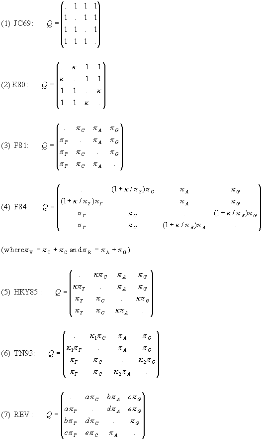
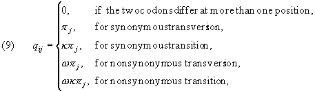

<HTML>
<HEAD>
<TITLE>
PAML Manual (Phylogenetic Analysis by Maximum Likelihood)
</TITLE>
</HEAD>

<body>
<center>
<h1> <font face="Garamond">

PAML Manual <br>(Phylogenetic Analysis by Maximum Likelihood)

</font></h1>


Version 1.4, July 1998 <p>

Ziheng Yang <p>

&copy; Copyright 1994, 1995, 1996, 1997, 1998 by Ziheng Yang.  The software package is provided &quot;as is&quot; without warranty of any kind.  In no event shall the author be held responsible for any damage resulting from the use of this software, including but not limited to the frustration that you may experience in using the package.  The program package, including source codes, example data sets, executables, and this documentation, is distributed free of charge for academic use only. <p><p>


Suggested citation: <p>

Yang, Z.  1997.  PAML: a program package for phylogenetic analysis by maximum likelihood.  CABIOS <B>13</B>:555-556. <br>

or
<br>

Yang, Z.  1998.  Phylogenetic Analysis by Maximum Likelihood (PAML), Version 1.4.  University College London.<p>


The author can be reached at <br>
<A HREF="http://abacus.gene.ucl.ac.uk/ziheng/ziheng.html">Ziheng Yang</A><BR>
<A HREF="http://www.ucl.ac.uk/biology/">Department of Biology </A><BR>
<A HREF="http://www.gene.ucl.ac.uk/">Galton Laboratory </A><BR>
<A HREF="http://www.ucl.ac.uk/">University College London </A><BR>
<A HREF="http:../how2findus.html">4 Stephenson Way</A><BR>
London NW1 2HE <BR>
Email: <A HREF="mailto:z.yang@ucl.ac.uk">z.yang@ucl.ac.uk</A> <BR>
Phone: +44 (171) 504 5083 <BR>
Fax: +44 (171) 383 2048<p>
</center>


<hr>
<h1>Table of contents</h1>
<UL>
<LI><A HREF="#changes">Recent changes </A>
<LI><A HREF="#introduction">Introduction </A>
<LI><A HREF="#files">Files in the package </A>
<LI><A HREF="#running">Running the Programs </A>

   <ul>
   <LI><A HREF="#initials">Initial values </A>
   <LI><A HREF="#finetuning"> Finetuning the iteration algorithm </A>
   <LI><A HREF="#basemlg"> Running <code>basemlg</code> </A>
   </ul>

<LI><A HREF="#input">Input File Formats </A>

   <ul>
   <LI><A HREF="#sequences">Sequence data format </A>
   <LI><A HREF="#trees">Tree structure file and representations of the tree topologies</A>
   <LI><A HREF="#baseml.ctl"> The control file for programs <code>baseml</code> and <code>basemlg</code></A>
   <LI><A HREF="#codeml.ctl"> The control file for the program <code>codeml</code> (<code>codonml</code> and <code>aaml</code>) </A>
   <LI><A HREF="#mcmctree.ctl"> The control file for the program <code>mcmctree</code> </A>
   </ul>

<LI><A HREF="#interpreting"> Interpreting Outputs </A>
   <ul>
   <LI><A HREF="#mlb"> Output file for <code>baseml</code></A>
   <LI><A HREF="#mlc"> Output file for <code>codeml</code> (<code>codonml</code> and <code>aaml</code>) </A>
   <LI><A HREF="#rst"> Secondary result file <code>rst</code> </A>
   </ul>

<LI><A HREF="#models">Models and Methods </A>
   <ul>
   <LI><A HREF="#Q4"> Substitution models for nucleotides (<code>baseml</code>) </A>
   <LI><A HREF="#Qcodon"> Substitution models for codons (<code>codonml:</code> <code>codeml.c</code> with <code>seqtype</code>=1) </A>
   <LI><A HREF="#Q20"> Substitution models for amino acids (<code>aaml: codeml.c</code> with <code>seqtype=2</code>) </A>
   <LI><A HREF="#rates"> Variable substitution rates across sites </A>
   <LI><A HREF="#mgene"> Models for combined analyses of heterogeneous data (multiple genes or codon positions)</A>
   <LI><A HREF="#clock"> The molecular clock </A>
   <LI><A HREF="#nhomo"> The nonhomogeneous models (<code>nhomo</code> for <code>baseml</code>)</A>
   <LI><A HREF="#ancestral"> Reconstruction of ancestral sequences </A>
   <LI><A HREF="#bayes"> Bayesian estimation of phylogenetic trees </A>
   <LI><A HREF="#simulate"> Simulating sequence data sets </A>
   <LI><A HREF="#treesearch"> Tree search algorithms </A>
   </ul>
<LI><A HREF="#technical"> Technical details, problems and limitations </A> 
   <ul>
   <LI><A HREF="#variables"> Adjustable variables in the source codes </A>
   <LI><A HREF="#problems"> Known problems </A>
   </ul>
<LI><A HREF="#thanks">Acknowledgments</A> 
<LI><A HREF="#references"> References </A> 
</UL>


<a name="changes">
<h1>Recent changes</h1></a>

Relative to version 1.3, the following changes are made.

<OL> 
<LI>
Most of the changes are in the program <code>codeml</code> (<code>aaml</code> for amino
acid sequences and <code>codonml</code> for codon
sequences).  A few new models of codon substitution are implemented
(see Yang and Nielsen 1998; Nielsen and Yang 1998; Yang 1998).

<LI>Some problems relating to ancestral sequence reconstruction (in
<code>baseml</code> and <code>codeml</code>) are fixed.  The earlier
algorithm does not work properly if the data contain more than several
sequences.  The algorithm makes a guess at the likely character states
at the interior nodes of the tree, and then uses those to generate
reconstructions (joint reconstructions, see eq. 2 in Yang et al. 1995)
to be evaluated.  Sometimes this strategy misses important
reconstructions, and as a result, the probabilities for reconstructed
characters at specific interior nodes (marginal reconstructions; see
eq. 4 in Yang et al. 1995) are substantially underestimated if the
number of sequences is not very small.  I have now written separate
codes to do the marginal reconstruction, evaluating all possible
character states for each interior node.  This works also under the
gamma model of substitution rates among sites, a feature that was not
implemented before.  The joint reconstruction works with one rate for
all sites only and has the old problem of possibly missing important
reconstructions.  However, the posterior probabilities for those joint
reconstructions that do get evaluated are accurate.  I have added an
option (choose RateAncestor = 2 rather than 1) for the user to specify
the reconstruction to be evaluated.  The two approaches are expected
to produce very similar results, and since the marginal reconstruction
is always reliable, perhaps it can always be used for data
analysis. (Thanks to Belinda Chang.)

<LI>The output file for estimated rates for sites under the
variable-rates models is now "Rates.out" instead of "rst".

<LI>I have implemented ancestral sequence reconstructions based on
codon-substitution models (<code>codonml</code>).  This has not been
tested carefully, and I would appreciate your comments if you use it.

<LI>A number of minor changes have been made.  I have fixed several floating exception errors that seem to occur on DEC Alpha machines only.  

<li> The documentation is now changed into the html format.
</OL>


<A NAME = "introduction">
<h1>Introduction</A></h1>

PAML is a package of programs for phylogenetic analyses of DNA or protein sequences using maximum likelihood (ML).  The PAML web page explains what the programs can and cannot do, how to download and compile the programs, and how to report bugs.  Those sections will not be duplicated in this documentation.
<P>

The program <code>baseml</code> is for analyzing nucleotide sequences.
The program <code>codeml</code> is formed by
merging two old programs: <code>codonml</code>, which implements the
codon-based models of Goldman and Yang (1994) for protein-coding DNA
sequences, and <code>aaml</code>, which implements models for amino
acid sequences. These two are now distinguished by a variable named
<code>seqtype</code> in <code>codeml</code>, which is 1 for codon
sequences and 2 for amino acid sequences.  In this document I use
<code>codonml</code> and <code>aaml</code> to mean
<code>codeml</code> with <code>seqtype</code> = 1 and 2, respectively.
The programs <code>baseml</code>, <code>codonml</code>, and
<code>aaml</code> use similar algorithms to fit models, the difference
being that the unit of evolution in the substitution model, referred
to as a "site" in the sequence, is a nucleotide, a codon, or an amino
acid for the three programs, respectively.  Markov process models are
used to describe substitutions between nucleotides, codons or amino
acids, with substitution rates assumed to be either constant or
variable among sites.  A <I>discrete-gamma</I> model (Yang, 1994c) is
used in <code>baseml</code>, <code>codonml</code>
and <code>aaml</code> to accommodate rate variation
among sites, by which rates for sites come from several (say, four or eight)
categories used to approximate the continuous gamma distribution.
When rates are variable at sites, a correlation of rates between
adjacent sites can be accounted for using an <I>auto-discrete-gamma
</I>model (Yang, 1995).  <p>

The program <code>basemlg</code> implements the
continuous gamma model of Yang (1993).  It is slow and feasible for
data of 4-6 species only.  The discrete-gamma model in <code>baseml</code> is recommended.<p>

General assumptions of the models (programs):
<UL>

<LI>Substitutions occur independently in different lineages;

<LI>Substitutions occur independently among sites (except for the
auto-discrete-gamma model which account for correlated substitution
rates at neighboring sites);

<LI>The process of substitution is described by a time-homogeneous Markov process.  Further restrictions may be placed on the structure of the <I>rate matrix </I>of the process and lead to different substitution models;

<LI>The process of substitution is stationary.  In other words, the
frequencies of nucleotides (<code>baseml</code>), codons
(<code>codonml</code>), or amino acids (<code>aaml</code>) have
remained constant over the time period covered by the data.

</UL>


The existence of a molecular clock (rate constancy among lineages) is
not necessary but can be imposed.  Variation (and dependence) of rates
at sites is allowed by the discrete-gamma (or auto-discrete-gamma)
models implemented in <code>baseml</code>, <code>codonml</code> and
<code>aaml</code>.  <p>

The sequences must be aligned, and sites involving gaps will be
removed from all sequences before analysis, with appropriate
adjustment to the sequence length. <p>


<a name = "files">
<h1>Files in the Package</h1></a>

The following files are included in the package:<p>

<i>Source codes: </i><dir>
<pre>
baseml.c    various models for nucleotide sequences <br>
codeml.c    models for codon (seqtype = 1) and amino acid (seqtype = 2) sequences <br>
pamp.c      parsimony analyses of nucleotide or amino acid sequences <br>
mcmctree.c  Markov chain Monte Carlo algorithm for Bayes estimation of phylogenies <br>
listtree.c  Tree comparison, and simulation of nucleotide sequences <br>
basemlg.c   Nucleotide-based model with (continuous) gamma rates among sites <br>
rell.c      The RELL approximate bootstrap method of Kishino and Hasegawa (1989) <br|>
treesub.c   a few functions <br>
treespace.c a few more functions <br>
tools.c     my toolkit <br>
tools.h     header file <p>
</pre></dir>

<i>Compiling commands: </i><dir>
<pre>
paml.cc     batch file for compiling PAML using the cc compiler <br>
paml.gcc    batch file for compiling PAML using the GNU gcc compiler <br>
paml.acc    batch file for compilation PAML using the SUN acc compiler <p>
</pre></dir>

<i>Control files: </i><dir>
<pre>
baseml.ctl    control file for running baseml and basemlg <br>
codeml.ctl    control file for codeml (i.e., codonml and aaml) <br>
pamp.ctl      control file for pamp <br>
mcmctree.ctl  control file for mcmctree <p>
</pre></dir>

<i>Data files for <code>codeml</code> (see the files for details): </i><dir>
<pre>
grantham.dat   amino acid distance matrix (Grantham 1974), used by codonml <br>
dayhoff.dat    Empirical amino acid substitution matrix of Dayhoff et al. (1978) <br>
jones.dat      Empirical amino acid substitution matrix of Jones et al. (1992) <br>
mtREV24.dat    Empirical amino acid substitution matrix of Adachi and Hasegawa (1996b) <br>
mtmam.dat      Empirical amino acid substitution matrix for mitochondrial proteins of mammals <p>
</pre></dir>

<i>Example tree structure files: </i><dir>
<pre>
trees.4s      tree structure file for 4-sequence data <br>
trees.5s      tree structure file for 5-sequence data <p>
</pre></dir>

<i>Documentations: </i><dir>
<pre>
paml.readme    readme file <br>
paml.html      paml web page, serving also as part of the manual (html file) <br>
pamlDOC.html   this document (html file) <p>
</pre></dir>

<b>Example data sets: </b> <br> Several example data sets are
included.  They were used in my papers to test new methods, and
are included here for error-checking.  <br><dir>

<code>brown.nuc</code>:  the 895-bp mtDNA data of Brown et al. (1982),
used in Yang et al. (1994) and Yang (1994c) to test models of variable
rates among sites. <p>

<code>mtprim9.nuc</code>: mitochondrial segment consisting 888 aligned
sites from 9 primate species (Hayasaka et al. 1988), used by Yang
(1994c) to test the discrete-gamma model and Yang (1995) to test the
auto-discrete-gamma models. <p>

<code>abglobin.nuc</code>: the concatenated alpha and  beta globin genes, example data for condonml <p>

<code>HIVenvY7.nuc</code>: HIV envelope genes, year 7 data, used by
Nielsen and Yang (1998) in developing models of variable seletive
constraints among sites. <p>

<code>lysozymeSmall.nuc</code>: primate lysozyme genes (Messier and Stewart 1997), analyzed by Yang (1998) in developing tests of positive selection along lineages.  This is the "small data set" analyzed in that paper. <p>

<code>stewart.aa</code>: lysozyme sequences of mammals (Stewart et al. 1987), used by Yang et al. (1995) to test methods for reconstructing ancestral amino acid sequences. <p>

<code>abglobin.aa</code>: the concatenated alpha- and beta-globins, translated from <code>abglobin.nuc</code> </dir>
<p>


<b>What files are needed?</b><p>

You copy the executables to to a directory containing your data files,
please note that the program <code>codeml</code> may need some of the
data files in the package such as <code>grantham.dat</code>,
<code>dayhoff.dat</code>, <code>jones.dat</code>,
<code>mtREV24.dat</code>, or <code>mtmam.dat</code>.  You should
probably copy these files togoether.  Other programs do not need such
data files apart from the sequence and tree files you specify in the
control file. <p>

Note also that the programs produce result files.  Some other files
with names <code>rub</code>, <code>lfh</code>, <code>rst </code>, or
<code>rates</code> may also be created.  You should not use these
names for your files. <p>


<a name = "running">
<h1>Running the Programs</h1>
</a>

The basics of running programs in the package are discussed in the
PAML web page.  Here are a few more tips. <p>

The iteration process, i.e., the minimization of the negative
log-likelihood, is recorded in <code>rub</code>.  For each round of
iteration, the size (norm) of the gradient or search direction (h),
the negative log likelihood, and the current values of parameters are
listed.  A healthy iteration is indicated by the decrease of both h
and the negative log likelihood, and h is particularly sensitive.
This file should be checked to ensure the convergence of the
algorithm.  A typical symptom of failure of the algorithm is that
estimates of parameters are at the preset boundaries, with values like
2.00000, 5.00000. <p>


<a name = "finetuning">
<h2>Finetuning the iteration algorithm</h2></a>

The iteration algorithm uses the difference approximation to calculate
the derivatives.  This method changes the variable (x) slightly, say
by a small number e, and see how the function value changes.  One such
formula is df/dx = [f(x+e)-f(x)]/e.  The small number e should be
small to allow accurate approximation but should not be too small to
avoid rounding errors.  You can change this value by adding a line in
the control files <code>baseml.ctl</code> or <code>codeml.ctl</code>
<br>
<pre>
	Small_Diff = 1e-6
</pre>	

The iteration is rather sensitive to the value of this variable, and
reasonable values are between 1e-5 and 1e-7.  This variable also
affects the calculation of the SE's for parameters, which are much
more difficult to approximate than the first derivatives.  If the
calculated SE's are sensitive to slight change in this variable, they
are not reliable. <p>

If you compile the source codes, you can also change the lower and
upper bounds for parameters.  I have not put these variables into the
control files.  See the section on <a href="#variables">Adjustable
variables</a>. <p>


<a name = "initials">
<h2>Initial values</h2></a>

You may change values of parameters in the control file such as kappa,
alpha, omega, etc. to start the maximum likelihood iteration from
different initial values.  However, initial values for the second and
later trees are determined by the program, and so you do not have
much control. <p>

If you have wasted enough time and gained some experience with PAML,
you may be interested in trying this.  You can collect initial values
for the maximum likelihoood iteration into a file called
<code>in.baseml</code> if you are running <code>baseml</code> or
<code>in.codeml</code> if you are running <code>codeml</code>.  When
the program senses this file, it will ask you to confirm and then read
it for initial values.  This may be useful if the iteration is somehow
aborted, and then you can collect current values of parameters from
the file <code>rub</code> into this file of initial values, so that
the new iteration can have a better start and converge faster.  This
file may also be useful if you experience convergence problems as it
allows you to start from different initial values in different runs.

The <code>rub</code> file records the iteration process and has one
line for each round of iteration.  Each line lists the current
parameter values after the symbol x; you can copy those numbers into
the file of initial values, and if you like, change one or a few of
the parameter values too. <p>


<a name = "basemlg">
<h2>Running <code>basemlg</code></h2></a>

Because of the intensive computation required by <code>basemlg</code>,
the discrete-gamma model implemented in baseml is recommended for data
analysis.  If you choose to use basemlg, you should run
<code>baseml</code> first, and then run <code>basemlg.</code> This
allows <code>baseml</code> to collect initial values into a file named
<code>in.basemlg</code>, for use by <code>basemlg</code>.  You can
also check the file <code>rub</code> to see the iteration converges
healthily.  Note that <code>basemlg</code> implements only a subset of
models in <code>baseml</code> (see <b>this link</b> for details). <p>


<a name = "input">
<h1>Input File Formats</h1></A>

<a name = "sequences">
<h2>Sequence data format</h2></a>

The sequence data format is that used in PHYLIP (Felsenstein, 1993),
but with some restrictions removed.  The first line contains the
number of species and the sequence length (possibly followed by option
characters).  With <code>codonml</code> (<code>codeml</code> with
<code>seqtype</code> = 1), the sequence length in the sequence file
refers to the number of nucleotides rather than the number of codons.
The only options allowed in the sequence file are I, S or G.  The
sequences may be in either <I>interleaved </I>format (option I,
example data file <code>abglobin.nuc</code>), or <I>sequential
</I>format (option S, example data file <code>brown.nuc</code>).  The
default option is S.  (Option G is used for combined analysis of
multiple gene data and is explained below.)  The following is an
example data set in the sequential format.  It has 4 sequences each of
60 nucleotides. <p>

<dir>
<pre>
 4  60 
sequence 1 
AAGCTTCACCGGCGCAGTCATTCTCATAAT 
CGCCCACGGACTTACATCCTCATTACTATT 
sequence 2 
AAGCTTCACCGGCGCAATTATCCTCATAAT 
CGCCCACGGACTTACATCCTCATTATTATT 
sequence 3 
AAGCTTCACCGGCGCAGTTGTTCTTATAAT 
TGCCCACGGACTTACATCATCATTATTATT 
sequence 4 
AAGCTTCACCGGCGCAACCACCCTCATGAT 
TGCCCATGGACTCACATCCTCCCTACTGTT <p>
</pre>
</dir>


<b>Species names.</b> Do not use symbols like , : ( ) in a species name
as they may confuse the programs.  The maximum number of characters in
a species name (LSPNAME) is specifed at the beginning of the main
programs <code>baseml.c</code> and <code>codeml.c</code>.  The default
value is 30.  In PHYLIP, exactly 10 characters are used for a species
name.  You may change the value of LSPNAME to 10 in the source codes
if you like.  To make this discrepancy less a problem, PAML considers
two consecutive spaces as the end of a species name, so that the
species name does not have to have exactly 30 (or 10) characters.  To
make this rule work, you should not have two consecutive spaces
<i>within</i> a species name.  For example the above data set can have
the following format too.  <p>

<dir>
<pre>
 4  60 

sequence 1   AAGCTTCACCGGCGCAGTCATTCTCATAAT 
CGCCCACGGACTTACATCCTCATTACTATT 

sequence 2   AAGCTTCACCGGCGCAATTATCCTCATAAT 
CGCCCACGGACTTACATCCTCATTATTATT 
sequence 3      AAGCTTCACC GGCGCAGTTG TTCTTATAAT  TGCCCACGGACTTACATCATCATTATTATT 
sequence 4   AAGCTTCACCGGCGCAACCACCCTCATGAT 
TGCCCATGGACTCACATCCTCCCTACTGTT <p>
</pre>
</dir>

In a sequence, three special characters ".", "-", and "?" may be used:
a dot means the same character as in the first sequence, a dash means
an alignment gap, and a question mark means an undetermined site.
Sites at which at least one sequence involves a "-" or "?" are excluded
from all sequences before analysis, with the sequence length adjusted.
For codon sequences, the whole codon is removed.  Characters T, C, A,
G, U, t, c, a, g, u are recognized as nucleotides (for <code>baseml</code>, <code>basemlg</code> and <code>codonml</code>),
while the standard one-letter codes (A, R, N, D, C, Q, E, G, H, I, L,
K, M, F, P, S, T, W, Y, V or their lowercase equivalents) are used for
amino acids.  Other alphabetic characters cause errors.
Non-alphabetic symbols such as &gt;&lt;!"£$%^0123456789 are simply
ignored and can be freely used as landmarks.  Lines do not have to be
equally long and you can put the whole sequence on one line. <p>

Notes may be placed at the end of the sequence file and will be
ignored by the programs. <p>

<B>Option G: </B>This option is for combined analyses of heterogeneous
data sets such as data of multiple genes or data of the three codon
positions.  The sequences must be concatenated and the option is used
to specify which gene or codon position each site is from.  There are
two data formats with this option.  The first is illustrated by an
excerpt of a sequence file listed below.  The example data of Brown
<I>et al. </I>(1982) are an 895-bp segment from the mitochondrial
genome, which codes for parts of two proteins (ND4 and ND5) at the two
ends and three tRNAs in the middle.  Sites in the sequence fall
naturally into 4 classes: the three codon positions and the tRNA
coding region.  The first line of the file contains the option
character G.  The second line begins with a G at the first column,
followed by the number of site classes.  The following lines contain
the site marks, one for each site in the sequence (or each codon in
the case of <code>codonml</code>).  The site mark specifies which
class each site is from.  If there are <I>g </I>classes, the marks
should be 1, 2, ..., <I>g</I>, and if <I>g </I>&gt; 9, the marks need
to be separated by spaces.  The total number of marks must be equal to
the total number of sites in each sequence.<p>

<DIR>
<pre>
  5   895    G 
G   4 
3  
123123123123123123123123123123123123123123123123123123123123 
123123123123123123123123123123123123123123123123123123123123 
123123123123123123123123123123123123123123123123123123123123 
123123123123123123123123123123123123123123123123123123123123 
123123123123123123123123123123123123123123123123123123123123 
123123123123123123123123123123123123123123123123123123123123 
123123123123123123123123123123123123123123123123123123123123 
1231231231231231231231231231231231231 
444444444444444444444444444444444444444444444444444444444444 
444444444444444444444444444444444444444444444444444444444444 
444444444444444444444444444444444444444444444444444444444444 
444444444444444444 
123123123123123123123123123123123123123123123123123123123123 
123123123123123123123123123123123123123123123123123123123123 
123123123123123123123123123123123123123123123123123123123123 
12312312312312312312312312312312312312312312312312312312312 
Human 
AAGCTTCACCGGCGCAGTCATTCTCATAATCGCCCACGGACTTACATCCTCATTACTATT 
CTGCCTAGCAAACTCAAACTACGAACGCACTCACAGTCGCATCATAATC........ 
Chimpanzee 
......... 
</pre>
</DIR>
<p>


If the data are concatenated sequences of multiple genes, a simpler
format, shown below for an example data set, may be used.  This
sequence has 1000 nucleotides from 4 genes, obtained from
concatenating four genes with 100, 200, 300, and 400 nucleotides from
genes 1, 2, 3, and 4, respectively.  The "lengths" for the genes must
be on the line that starts with G, <I>i.e.</I>, on the second line of
the sequence file.  (This requirement allows the program to determine
which of the two formats is being used.) The sum of the lengths for
the genes should be equal to the number of nucleotides, amino acids,
or codons in the combined sequence for <code>baseml</code> (or <code>basemlg</code>), <code>aaml</code>, and <code>codonml</code>, respectively.<p>

<DIR>
<pre>
5   1000   G 
G 4    100 200 300 400 
Sequence 1  
TCGATAGATAGGTTTTAGGGGGGGGGGTAAAAAAAAA....... 
</pre>
</DIR>


<a name="trees">
<h2>Tree structure file and representations of the tree topology</h2></a>


A <i>tree structure file</i> is used when <code>runmode</code> = 0 or
1.  The file name is specified in the appropriate control file.  Two
methods for representing a tree topology are used in PAML.  The first
is the familiar parenthesis representation, that is used in virtually
any phylogenetic software.  The species can be represented using
either their names or their indexes corresponding to the order of
their occurrences in the sequence data file.  If species names are
used, they have to match exactly those in the sequence data file
(including spaces or strange characters).  Branch lengths are allowed
but are ignored.  The following is a possible tree structure file for
a data set of four species (human, chimpanzee, gorilla, and orangutan,
occurring in this order in the data file).  The first tree is a star
tree, while the next four trees are the same.

<DIR>
<pre>
4  5              // 4 species, 5 trees 
(1234)            // the star tree 
((12)34)          // species 1 and 2 are clustered together 
((1,2),3,4)       // Commas are needed with more than 9 species 
((human,chimpanzee),gorilla,orangutan) 
((human:.1,chimpanzee:.2):.05,gorilla:.3,orangutan:.5) 
</pre>
</DIR>


A second way of representing the tree topology used in PAML is by
means of its branches.  This is mainly used in the result files for
outputting the estimated branch lengths.  For example, the tree
((12)34) is specified by its 5 branches:

<DIR>
<pre>
      5 .. 6,  6 .. 1,  6 .. 2,  5 .. 3,  5 .. 4
</pre>
</DIR>


The nodes in a tree are marked with consecutive natural numbers, with
1, 2, ..., <I>s</I> representing the <I>s</I> known sequences, in the
same order as in the data.  A number larger than <I>s</I> means an
interior node, at which the sequence is unknown.  This representation
saves space in the output in comparison with a tree diagram but may
make it difficult to discern the topology when there are many species.
In case some sequences in the data are ancestral to some others, this
method is convenient.  To use this format in the tree structure file,
give the number of branches, and then the branches as specified by the
end nodes.  For example, the tree in the following
<code>trees.5s</code> file has 4 branches, with taxon 5 to be the
common ancestor of taxa 1, 2, 3, and 4:

<dir>
<pre>
5  1 
4     5 1   5 2   5 3   5 4 
</pre>
</dir>

Whether the tree will be considered rooted or unrooted depends on
whether a molecular clock is assumed.  Without the clock, the trees
are unrooted, and so ((12)34) is the same as (12(34)); with the clock,
the trees are rooted and these two trees are different and both are
different from (((12)3)4). <p>


<a name = "baseml.ctl">
<h2>The control file for programs <code>baseml</code> and
<code>basemlg</code></h2> </a>

The default control file for <code>baseml</code> and
<code>basemlg</code> is <code>baseml.ctl</code>, and an example is
shown below.  Note that spaces are required on both sides of the equal
sign, and blank lines or lines beginning with "*" are treated as
comments.  Options not used can be deleted from the control file.  <p>

<DIR>
<pre>
      seqfile = brown.nuc * sequence data file name  
      outfile = mlb       * main result file 
     treefile = trees.5s  * tree structure file name 

        noisy = 3   * 0,1,2,3: how much rubbish on the screen 
      verbose = 1   * 1: detailed output, 0: concise output 
      runmode = 0   * 0: user tree;  1: semi-automatic;  2: automatic 
                    * 3: StepwiseAddition; (4,5):PerturbationNNI   

        model = 4   * 0:JC69, 1:K80, 2:F81, 3:F84, 4:HKY85, 5:TN93, 6:REV 
        Mgene = 0   * 0:rates, 1:separate; 2:diff pi, 3:diff kapa, 4:all diff   
    fix_kappa = 0   * 0: estimate kappa; 1: fix kappa at value below 
        kappa = 10   * initial or fixed kappa    

    fix_alpha = 0   * 0: estimate alpha; 1: fix alpha at value below 
        alpha = 0.5  * initial or fixed alpha, 0:infinity (constant rate) 
       Malpha = 0   * 1: different alpha's for genes, 0: one alpha 
        ncatG = 8   * # of categories in the dG, AdG, or nparK models of rates  

  
      fix_rho = 1   * 0: estimate rho; 1: fix rho at value below  
          rho = 0.  * initial or fixed rho,   0:no correlation 
        nparK = 0   * rate-class models. 1:rK, 2:rK&amp;fK, 3:rK&amp;MK(1/K), 4:rK&amp;MK   

  
        clock = 0   * 0: no clock, unrooted tree, 1: clock, rooted tree 
        nhomo = 0   * 0 &amp; 1: homogeneous, 2: kappa for branches, 3: N1, 4: N2 
        getSE = 0   * 0: don't want them, 1: want S.E.s of estimates 
 RateAncestor = 0   * (1/0): rates (alpha&gt;0) or ancestral states (alpha = 0) 

</pre>
</DIR>


The control variables are described below. <p>

<code>seqfile</code>, <code>outfile</code>, and <code>treefile</code>,
specifies the names of the sequence data file, main result file, and
the tree structure file, respectively.<p>

<code>noisy</code> controls how much output you want on the screen.
If the model being fitted involves much computation, you can choose a
large number for <code>noisy </code>to avoid loneliness.
<code>verbose</code> controls how much output in the result file.<p>

<code>runmode</code> = 0 means evaluation of the tree topologies
specified in the tree structure file only, <code>runmode</code> = 1 or
2 means heuristic tree search by the star-decomposition algorithm.
With <code>runmode</code> = 2, the algorithm starts from the star
tree, while if <code>runmode</code> = 1, the program will read a
multifurcating tree from the tree structure file and try to estimate
the best bifurcating tree compatible with it.  <code>runmode</code> =
3 means stepwise addition.  <code>runmode</code> = 4 means NNI
perturbation with the starting tree obtained by a parsimony algorithm,
while <code>runmode</code> = 5 means NNI perturbation with the
starting tree read from the tree structure file.  The tree search
options do not work well, and so use <code>runmode</code> = 0 as much
as you can. <p>

<code>model</code> specifies the model of nucleotide substitution.<p>

<code>Mgene</code> is used with the option G in the data file.  Choose 0 if option G is not used in the data file. <p>

<code>fix_kappa</code> specifies whether </code><FONT
FACE="Symbol">k</font> in K80, F84, or HKY85 is given at a fixed value
or is to be estimated by iteration from the data.  If
<code>fix_kappa</code> = 1, the value of another variable,
<code>kappa</code>, is the given value, and otherwise the value of
<code>kappa</code> is used as the initial estimate for iteration.  The
variables <code>fix_kappa</code> and <code>kappa</code> have no effect
with JC69 or F81 which does not involve such a parameter, or with TN93
and REV which have two and five rate parameters respectively and all
of them are estimated from the data.<p>

<code>fix_alpha</code> and <code>alpha</code> work in a similar way,
where <code>alpha</code> refers to the shape parameter <FONT
FACE="Symbol">a</code> of the gamma distribution for variable
substitution rates across sites (Yang 1994c).  The model of a single
rate for all sites is specified as <code>fix_alpha</code> = 1 and
<code>alpha</code> = 0 (0 means infinity), while the (discrete-) gamma
model is specified by a positive value for <code>alpha</code>, and
<code>ncatG</code> is then the number of categories for the
discrete-gamma model (<code>baseml</code>). <p>

<code>fix_rho</code> and <code>rho</code> work in a similar way and
concern independence or correlation of rates at adjacent sites, where
<FONT FACE="Symbol">&#114;</code> (rho) is the correlation parameter
of the auto-discrete-gamma model (Yang 1995).  The model of
independent rates for sites is specified as <code>fix_rho</code> = 1
and <code>rho</code> = 0; choosing <code>alpha</code> = 0 further
means a constant rate for all sites.  The auto-discrete-gamma model is
specified by positive values for both <code>alpha</code> and
<code>rho</code>.  The model of a constant rate for sites is a special
case of the (discrete) gamma model with <FONT
FACE="Symbol">&#97;</code> = <FONT FACE="Symbol" SIZE = 2>¥</code>
(<code>alpha</code> = 0), and the model of independent rates for sites
is a special case of the auto-discrete-gamma model with <FONT
FACE="Symbol">&#114;</code> = 0 (<code>rho</code> = 0).<p>

<code>nparK</code> specifies nonparametric models for variable and
Markov-dependent rates across sites: <code>nparK</code> = 1 or 2 means
several (<code>ncatG</code>) categories of independent rates for
sites, while <code>nparK</code> = 3 or 4 means the rates are
Markov-dependent at adjacent sites; <code>nparK</code> = 1 and 3 have
the restriction that each rate category has equal probability while
<code>nparK</code> = 2 and 4 do not have this restriction (Yang,
1995). <p>

<code>clock</code> specifies whether we assume rate constancy along
different branches in the tree (<code>clock</code> = 1) or variable
rates among lineages (<code>clock</code> = 0).  <p>

<code>nhomo</code> relates to the non-homogeneous process models
(<code>nhomo</code> = 3 or 4) (Yang and Roberts 1995).  Choosing
<code>nhomo</code> = 1 will produce the proper maximum likelihood
estimates of the frequency parameters (<FONT FACE="Symbol">p</font><SUB>T</SUB>, <FONT FACE="Symbol">p</font><SUB>C</SUB> and <FONT FACE="Symbol">p</font><SUB>A</SUB>; <FONT FACE="Symbol">p</font><SUB>G</SUB> is not a free parameter as the frequencies
sum to 1) in the F81, F84, HKY85, TN93, or REV models, while normally
(<code>nhomo</code> = 0) these are estimated by the averages of the
observed frequencies.  <code>nhomo</code> = 2 uses one
transition/transversion rate ratio (<FONT FACE="Symbol">k</font>) for each branch in the tree for the K80, F84, and
HKY85 models (Yang 1994b).  <p>

<code>getSE</code> tells whether we want estimates of the standard
errors of estimated parameters.  These are crude estimates, calculated
by the curvature method, <I>i.e.</I>, by inverting the matrix of
second derivatives of the log-likelihood with respect to parameters.
The second derivatives are calculated by the difference method, and
are not always reliable.  Even if this approximation is reliable,
tests relying on the SE's should be taken with caution, as such tests
rely on the normal approximation to the maximum likelihood estimates.
The likelihood ratio test should always be preferred.  The option is
not available and choose <code>getSE = 0</code> when tree-search is
performed (<code>runmode</code> = 1 or 2).  <p>

<code>RateAncestor</code> also works with <code>runmode</code> = 0
only, and if given the value 1, will lead to calculation of rates for
sites along the sequence for models of gamma rates across sites or
reconstruction of ancestral sequences for models of a constant rate at
sites.  <p>

With <code>basemlg</code>, tree-search or the assumption of a
molecular clock are not allowed and so choose <code>runmode = 0</code> and <code>clock = 0</code>.  Substitution models available for basemlg are JC69, F81, K80, F84
and HKY85, and a continuous gamma is always assumed for rates at
sites.  The variables <code>ncatG</code>, <code>given_rho</code>,
<code>rho</code>, <code>nhomo </code>have no effect.  The S.E.'s of
parameter estimates are always printed out because they are calculated
during the iteration, and so getSE has no effect. <p>


<a name = "codeml.ctl">
<h2> The control file for the program <code>codeml</code>
(<code>codonml</code> and <code>aaml</code>) </h2></a>

Since the codon based analysis and the amino acid based analysis use
different models, and some of the control variables have different
meanings, it may be a good idea to use different control files for
codon and amino acid sequences. The default control file for
<code>codeml</code> is <code>codeml.ctl</code>, as shown below.<p>

<pre>
     seqfile = stewart.aa * sequence data file name 
     outfile = mlc         * main result file name 
    treefile = trees.6s    * tree structure file name  

       noisy = 3   * 0,1,2,3,9: how much rubbish on the screen 
     verbose = 0   * 1: detailed output, 0: concise output 
     runmode = 0   * 0: user tree;  1: semi-automatic;  2: automatic 
                   * 3: StepwiseAddition; (4,5):PerturbationNNI   

     seqtype = 2   * 1:codons; 2:AAs; 3:codons--&gt;AAs 
   CodonFreq = 2   * 0:1/61 each, 1:F1X4, 2:F3X4, 3:codon table 
      aaDist = 0   * 0:equal aa distance, 1: Grantham1974 (for codon models)  

  aaRatefile = jones.dat  * only used for aa seqs and when model = empirical(_F)   
                          * dayhoff.dat, jones.dat, mtmam.dat, or your own 
       model = 2 
                    * models for codons: 
                      *  0:one N/S rate, 1: b ratios, 2: 2 or more ratios 
                    * models for AAs or codon-translated AAs: 
                      *  0:poisson, 1:equal_input, 2:Empirical, 3:Empirical+F 
                      *  6:FromCodon, 7:AAClasses, 8:REVaa_0, 9:REVaa(nr = 189)  

      NSsites = 0   * dN/dS among sites. 0:no variation, 1:neutral, 2:positive 
        icode = 0   * 0:standard genetic code; 1:mammalian mt; 2-10:below 
        Mgene = 0   * 0:rates, 1:separate; 2:pi, 3:kappa, 4:all 

    fix_kappa = 0   * 1: kappa fixed, 0: kappa to be estimated 
        kappa = 4.6 * initial or fixed kappa 
    fix_omega = 0   * 1: omega or omega_1 fixed, 0: estimate  
        omega = 1   * initial or fixed omega, for codons or codon-transltd AAs  


    fix_alpha = 1   * 0: estimate gamma shape parameter; 1: fix it at alpha 
        alpha = 0.  * initial or fixed alpha, 0:infinity (constant rate) 
       Malpha = 0   * different alphas for genes  
        ncatG = 8   * # of categories in the dG or AdG models of rates  

      fix_rho = 1   * 0: estimate rho (correlation parameter); 1: fix it at rho 
          rho = 0.  * initial or fixed rho,   0:no correlation  

        clock = 0   * 0: no clock, unrooted tree, 1: clock, rooted tree 
        getSE = 0   * 0: don't want them, 1: want S.E.s of estimates 
 RateAncestor = 0   * (1/0): rates (alpha&gt;0) or ancestral states (alpha = 0) 
</pre>


The variables <code>seqfile</code>, <code>outfile</code>,
<code>treefile</code>, <code>noisy</code>, <code>Mgene</code>,
<code>fix_alpha</code>, <code>alpha</code>, <code>Malpha</code>,
<code>fix_rho</code>, <code>rho</code>, <code>clock</code>,
<code>getSE</code> and <code>RateAncestor</code> are used in the same
way as in <code>baseml.ctl</code> and are described in the previous
section.  The variable <code>seqtype</code> specifies the type of
sequences in the data; <code>seqtype</code> = 1 means codon sequences
(the program is then <code>codonml</code>); 2 means amino acid
sequences (the program is then <code>aaml</code>); and 3 means codon
sequences which are to be translated into proteins for analysis. <p>

<b>codon sequences (<code>seqtype</code> = 1):</b> <code>CodonFreq</code>
specifies the equilibrium codon frequencies in the model of Goldman
and Yang (1994).  These frequencies can be assumed to be equal (1/61
each for the standard genetic code, <code>CodonFreq</code> = 0),
calculated from the average nucleotide frequencies
(<code>CodonFreq</code> = 1), from the average nucleotide frequencies
at the three codon positions (<code>CodonFreq</code> = 2), or used as
free parameters (<code>CodonFreq</code>&nbsp; = &nbsp;3).  The variable
<code>aaDist</code> determines whether equal amino acid distances are
assumed (= 0) or Grantham's matrix is used (= 1).  Grantham's matrix,
or Goldman and Yang's (1994) use of it, does not seem to fit data
well, and the equal distance model (<code>aaDist</code> = 0) is recommended. <p>

The variable <code>model</code> concerns assumptions about the <I>d</I><SUB>N</SUB>/<I>d</I><SUB>S</SUB> rate ratios (or the
<code>omega</code> parameters) among branches (Yang 1998;
Yang and Nielsen 1998).   The value 0 means one <I>d</I><SUB>N</SUB>/<I>d</I><SUB>S</SUB> ratio for all lineages (branches), 1
means one ratio for each branch (the free-ratio model), and 2 means an
arbitrary number of ratios (such as the 2-ratios or 3-ratios models).
Under the last model (<code>model = 2</code>), the program asks the user to input a branch mark for the <I>d</I><SUB>N</SUB>/<I>d</I><SUB>S</SUB> ratio assumed for each branch.
This should be a integral number between 0 to <i>k</i> - 1 if <i>k</i> different <I>d</I><SUB>N</SUB>/<I>d</I><SUB>S</SUB> ratios (<FONT
FACE="Symbol">w</font><sub>0</sub> - <FONT
FACE="Symbol">w</font><sub><i>k</i> - 1</sub>) are assumed for the branches of the tree.   This process should be frustrating if the tree is not very small.
I run the program first to let it output the tree topology using the branch representation on the screen.  I then prepare the branch marks in a file, say, <code>in</code>.   Finally I run the program using redirection so that it will read the input from the prepared file <pre>
    codeml < in
</pre>
Redirection is not permitted on a MAC, but I suppose you can prepare the branch marks in a file and then copy and past them into the session running the program.  Furthermore, under this model, the variable <code>fix_omega </code>fixes the last<code>
</code><I>d</I><SUB>N</SUB>/<I>d</I><SUB>S</SUB> ratio (<FONT
FACE="Symbol">w</font><sub><i>k</i> - 1</sub>) at the value of
<code>omega</code> specified in the file.  This option can be used to test, for example, whether the ratio for a specific lineage is significantly different from one. <p>

<code>Nssites</code> specifies a few models that allow the
<I>d</I><SUB>N</SUB>/<I>d</I><SUB>S</SUB> ratio to vary among sites
(Nielsen and Yang 1998).  <code>NSsites</code> = 0, which means one
ratio for all sites, should normally be used.
<code>NSsites</code> = 1 specifies a neutral model which has
two categories of sites at which the
<I>d</I><SUB>N</SUB>/<I>d</I><SUB>S</SUB> rate ratio is either 1
(neutral sites) or 0 (conserved sites).  Parameters in this model
include the proportion of the neutral sites. <code>NSsites</code> = 2
specifies a selection model with an additional category of sites at
which the <I>d</I><SUB>N</SUB>/<I>d</I><SUB>S</SUB> rate ratio is &gt;
1.  Parameters under this model include the proportions of neutral and
conserved sites (<I>p</I><SUB>1</SUB> and <I>p</I><SUB>2</SUB>) and
the <I>d</I><SUB>N</SUB>/<I>d</I><SUB>S</SUB> rate ratio at the
selected sites.  Equal amino acid distances are used, and the
<I>d</I><SUB>N</SUB>/<I>d</I><SUB>S</SUB> ratio is equal to parameter
<FONT FACE="Symbol">w</font> in equation 9.  The continuous neutral and selection models of Nielsen and Yang (1998) are not implemented in the program. but may be put in if there is a demand. <p>

The genetic code table is selected using <code>icode</code>.  About a
dozen genetic code tables are implemented, with 0 standing for the
standard code and 1 for the mammalian mitochondrial code (see notes at
the end of <code>codeml.ctl</code>).<p>

<b>Amino acid sequences (<code>seqtype</code> = 2 or 3):</b> The
variable <code>model</code> specifies the model of amino acid
substitution: 0 for the Poisson model assuming equal rates for any
amino acid substitutions (Bishop and Friday, 1987); 1 for the
proportional model in which the rate of change to an amino acid is
proportional to the frequency of that amino acid.  <code>Model</code>
= 2 specifies a class of empirical models, and the empirical amino
acid substitution rate matrix is given in the file specified by
<code>aaRatefile</code>.  Files included in the package are for the
empirical models of Dayhoff <I>et al</I>. (1978) (dayhoff.dat) and
Jones <I>et al</I>. 1992 (jones.dat) (see Kishino <I>et al.</I>, 1990
for the construction).  The file <code>mtmam.dat</code> has a matrix
for mitochondrial proteins estimated by maximum likelihood from a data
set of 20 mammals.  The mtREV24 model of the MOLPHY package is also
provided (the file <code>mtREV24.dat</code>).  They two models are
similar, and the difference is that the former is derived from
proteins from mammals only while the latter came from more-diverse
species including chicken, fish, from, and lamprey.  <p>

If you hope to specify your own substitution rate matrix, have a look
at one of those files, which has notes about the file structure.
Other options for the amino acid substitution model should be
ignored.<p>

To summarize, the variables <code>model</code>, <code>aaDist</code>,
<code>CodonFreq</code>, <code>NSsites</code>, and <code>icode</code>
are used for codon sequences (seqtype = 1), while <code>model</code> and
<code>aaRatefile</code> are used for amino acid sequences.<p>

<code>runmode</code> also works in the same way as in
<code>baseml.ctl.</code> However, <code>runmode</code> = -2 for
<code>codonml</code> forces the program to calculate the numbers of
synonymous (<I>d</I><SUB>S</SUB>) and nonsynonymous
(<I>d</I><SUB>N</SUB>) substitutions per site for all pairwise
sequence comparisons.  The numbers of synonymous (<I>S</I>) and
nonsynonymous (<I>N</I>) sites in each pairwise comparison are also
calculated, scaled so that they sum to the total number of nucleotides
in the sequence.  The method of Goldman and Yang (1994) is used.  You
can choose different values for <code>CodonFreq</code> for this
calculation.<p>


<a name = "mcmctree.ctl">
<h2>The control file for the program <code>mcmctree</code> </h2></a>


The default control file name is <code>mcmctree.ctl</code>, and a sample copy is shown below.

<DIR>
<pre>
    seqfile    = mtprim9.nuc    * sequence data file name
    outfile    = mcmctree.out     * main result file name
    treefile   = trees.9s      * tree structure file name 
    LHfile     = Lhs    * LH file name. read (MCMC=0) or overwritten (MCMC=1)
      MCMC     = 0      *0: read LHs from LHfile, 1: use MCMC to generate Lhs
      beta     = 0.15    * prob{change labeled history}, used only if MCMC=1 
    delta0     = 1       * small number for MCMC, used only if MCMC=1 
    delta1     = .2       * smaller number for comparing candidate LHs

     model     = 2    * 0:JC69, 1:K80, 2:F81, 3:F84, 4:HKY85

     kappa     = 2.    * given kappa and omega in GY94.
     alpha     = 0    * given alpha, 0:infinity
     ncatG     = 8    * # of categories in the dG or AdG models of rates

     hierarch     = 0    * 1:hierarchical; 0:empirical Bayes analysis
     birth     = 6.7    * lineage birth rate
     death     = 2.5    * lineage death rate
     sample     = .06    * sampling proportion
     mutate     = .24    * mutation rate (# of mutations from root to present)
</pre>
</DIR>


The variables <code>seqfile</code>, <code>outfile</code>,
<code>treefile</code>, <code>model</code>, <code>kappa</code>,
<code>alpha</code>, and <code>ncatG</code> are defined as in
<code>baseml.ctl</code> for program <code>baseml</code>.  The program
first collects a set of candidate labeled histories.  If
<code>MCMC</code> = 0, the candidate labeled histories are read from the
file <code>LHfile</code>, while if <code>MCMC</code> = 1, they are
generated from the Markov chain Monte Carlo, with the Monte Carlo
integration over ancestral speciation times evaluated at a low
accuracy level (controled by <code>delta0</code>).  The program then
calculates the (relative) posterior probabilities of these candidate
labeled histories, with the Monte Carlo integration evaluated at a
higher accuracy level (controled by <code>delta1</code>).  The Markov
chain moves with probability <code>beta</code> to another labeled
history of the same tree topology, or to a labeled history of a
different tree topology through a nearest neighbor interchange.
<code>hierarch </code>controls whether an empirical Bayes analysis or
a hierarchical Bayes analysis is to be performed.  <code>birth</code>,
<code>death</code>, and <code>sample</code> are paramters of the prior
distribution specified by the birth-death process with species
sampling. <p>


<a name="interpreting">
<h1>Interpreting Outputs</h1></a>

<a name="mlb">
<h2>Output file for <code>baseml</code></h2></a>

This file is self-explanatory and part of an example output file (from
<code>baseml</code>) is listed below. Descriptive
statistics are always listed.  The observed <I>site patterns </I>and
their frequencies are listed, together with the proportions of
<I>constant patterns</I>.  Nucleotide frequencies for each species
(and for each gene in case of multiple gene data) are counted and
listed.  <i>l</i><SUB>max</SUB> = 
ln(<I>L</I><SUB>max</SUB>) is the upper limit of the log likelihood
and may be compared with the likelihood for the best (or true) tree
under the substitution model to test the model's goodness of
fit to data (Goldman, 1993a). <p>

<DIR>
<pre>
baseml  brown.nuc  HKY85  (4 genes, different rates) 
human 
chimapnzee 
gorilla 
orangutan 
gibbon  

ns = 5   ls = 895 
ngene = 4:  lengths: 233  232  232  198 
# of site patterns = 153 
Average T:0.25318  C:0.32894  A:0.31196  G:0.10592 
# constant sites: 613 ( 68.49%)  

TREE # 1: (12345)  
lnL(ntime: 5 np: 9): -2587.506845    +0.000000 
  6..1    6..2    6..3    6..4    6..5  
0.03882 0.05012 0.06074 0.14634 0.18633 0.33989 3.40714 0.58077 11.46578  


TREE # 2: ((123)45) 
lnL(ntime: 6 np: 10): -2550.884230   +36.622616 
  6..7    7..1    7..2    7..3    6..4    6..5  
0.05586 0.03290 0.04135 0.05501 0.08516 0.12082 0.39024 3.93286 0.64946 11.72917  

TREE # 3: (((12)3)45) 
lnL(ntime: 7 np: 11): -2542.948041   +44.558804 
  6..7    7..8    8..1    8..2    7..3    6..4    6..5  
0.05081 0.01323 0.03219 0.04059 0.04502 0.08774 0.12418 0.37752 3.83740 0.61889 12.05461 
</pre>
</DIR >


Pairwise distances are calculated based on the same model specified
for the likelihood analysis, with either a single rate for all sites
or (continuous) gamma rates for sites assumed; in the latter case the
initial value for the <FONT FACE="Symbol" SIZE = 2>a</code> parameter is
used in the calculation.  If the specified model is HKY85 or REV, the
distances are calculated using the model of Tamura and Nei (1993).
The transition/transversion rate ratio (<FONT FACE="Symbol">k</code>)
for the K80, F84 models are also estimated for each pairwise
comparison, and with the model of Tamura and Nei (1993) which has two
such ratios, the average is calculated. <p>

For <code>runmode = 0 </code>(user tree), the programs fit branch
lengths by the (ordinary) least squares method for each tree topology
based on pairwise distance estimates.  These are then used as initial
values for iterative likelihood estimation; initial values chosen in
this way are actually quite poor because the two methods normally
produce quite different branch length estimates, especially for "bad"
trees (Yang 1994b).  For each tree, the log likelihood is listed,
together with the likelihood difference between the current tree and
the first tree (usually a star-like tree).  This likelihood difference
is listed for easy comparison but not for evaluating the reliability
of the bifurcating tree.  The listed value for <code>ntime</code> in
the bracket is the number of branches when the clock is not assumed or
the number of interior nodes when the clock is assumed, while
<code>np</code> is the number of all parameters being estimated.
Theoretically, a bifurcating tree should not be poorer (have lower
likelihood value) than the star-like tree, but with my programs, the
bifurcating tree may look slightly worse.  The reason is that
parameters are bounded during the iteration; for example, branch
lengths may be restricted to be, say, &gt; 0.0001.  If this happens,
one or more interior-branch lengths should be very close to zero, and
the bifurcating tree should be taken as converging to the
multifurcating tree. <p>

For the tree-search modes (<code>runmode</code> = 1
or 2), two values are listed for the likelihood: the first is the log
likelihood of the current tree and the second is the likelihood
increment relative to the best tree of the previous search stage. <p>

Below the line of likelihood values are the maximum likelihood
estimates of parameters.  These include branch lengths in an unrooted
tree or divergence times in a rooted tree (both called time
parameters), and other parameters which are common to tree topologies.
If you choose <code>verbose = 1</code>, the program will list
parameter estimates in more detail so that you know which is which.
Parameters in the programs are arranged in a fixed order in the output
(and in the iterative algorithm): <p>

<DIR>
[1] <I>t</I>: branch lengths (<code>clock</code> = 
0) or divergence times (<code>clock</code> = 1);<br>

[2] <I>c<SUB>j</I></SUB>: rate parameters for genes (<I>g</I> - 1
parameters for <I>g</I> genes; <I>c</I><SUB>1</SUB> = 1); <br>

[3] rate ratio parameters: <FONT FACE="Symbol" SIZE = 2>k</code> in K80,
F84, HKY85, <FONT FACE="Symbol" SIZE = 2>k</code><SUB>1</SUB> and <FONT
FACE="Symbol" SIZE = 2>k</code><SUB>2</SUB> in TN93, or <I>a</I>,
<I>b</I>, <I>c</I>, <I>d</I>, <I>e </I>in REV (TN93 and REV for
<code>baseml</code> only); <br>

[4] frequency parameters <FONT FACE="Symbol">p</code><SUB>T</SUB>, <FONT FACE="Symbol">p</code><SUB>C</SUB>, <FONT FACE="Symbol">p</code><SUB>A></SUB> (for <code>nhomo</code> &gt; 0 in <code>baseml</code> only); <br>

[5] <I><FONT FACE="Symbol" SIZE = 2>a</I></code> of the (discrete-)
gamma distribution; <br>

[6] <FONT FACE="Symbol" SIZE = 2>r</code> of the auto-discrete-gamma
model (unavailable for <code>basemlg</code>); <p>
</DIR>


The above list does not include parameters that do not exist in the
model or are not estimated by iteration.  For example, when JC69 is
assumed or when K80 is assumed with <code>fix_kappa</code> = 1, <FONT
FACE="Symbol">k</font> will not be on the above list in either model
as it is not a parameter to be estimated from the data.  With data of
multiple genes (option G in the data file and <code>Mgene</code> in
the control file), the above order of parameters is maintained.  For
example, if different transition/transversion rate parameters and
gamma distributions are assumed for different genes in the TN93 model,
the order of the parameters will be <FONT FACE="Symbol"
>k</font><SUB>1</SUB> and <FONT FACE="Symbol">k</font><SUB>2</SUB> for
the first gene, <FONT FACE="Symbol">k</font><SUB>1</SUB> and <FONT
FACE="Symbol">k</font><SUB>2</SUB> for the second gene, and so on, and
<FONT FACE="Symbol">a</code> for the first gene, followed by <FONT
FACE="Symbol">a</font> for the second gene, and so forth. <p>

Without the assumption of a molecular clock, the model will involve as
many time parameters as the number of branchs; estimates of these are
listed right below the branches.  When a clock is assumed, the model
will involve as many time parameters as the number of interior nodes,
which are the times before present of divergence at the nodes.  For
example, the rooted tree ((13)24), represented with its branches as
<p>


<DIR>
    5 .. 6,  6 .. 1, 6 .. 3, 5 .. 2, 5 .. 4 
</DIR>

has two interior nodes (5 and 6) and has two time parameters; these
are arranged in the increasing order of the node numbers (<I>i.e.</I>,
that for node 5 comes first and that for node 6 second). <p>

In the example shown above, the HKY85 model was fitted to the data of
Brown <I>et al</I>. (1982).  The sites are grouped into four classes
(4 genes).  Tree #3, represented as (((12)3)45), is (((human,
chimpanzee), gorilla), orangutan, gibbon), and estimates of the common
parameters from this tree are <I>c</I><SUB>2</SUB> = 0.37752,
<I>c</I><SUB>3</SUB> = 3.83740, <I>c</I><SUB>4</SUB> = 0.61889, and
</code><FONT FACE="Symbol" SIZE = 2>k</code> = 12.05461. <p>

With <code>getSE</code> = 1, the S.E.s are calculated as the
square roots of the large sample variances and listed exactly below
the parameter estimates.  Zeros on this line mean errors, either
caused by divergence of the algorithm or zero branch lengths.  The
S.E.&iacute;s of the common parameters measure the reliability of the
estimates.  For example, (</code><I><FONT FACE="Symbol" SIZE = 2>k
-</I></code> 1)/SE(</code><I><FONT FACE="Symbol" SIZE = 2>k</I></code>),
when </code><I><FONT FACE="Symbol" SIZE = 2>k</I></code> is estimated
under K80, can be compared with a normal distribution to see whether
there is real difference between K80 and JC69.  The test can be more
reliably performed by comparing the log-likelihood values under the
two models, using the likelihood ratio test.  It has to be stressed
that the S.E.&iacute;s of the estimated branch lengths should not be
misinterpreted as an evaluation of the reliability of the estimated
tree topology (<I>e.g.</I>, Yang, 1994b, Goldman and Yang, 1994). <p>


<a name="mlc">
<h2>Output file for <code>codeml</code> (<code>codonml</code> and
<code>aaml</code>) </h2></a>

<b>For <code>codonml</code> (<code>codeml</code> with <code>seqtype = 1</code>).
</b>

The codon frequencies in each sequence are counted and listed in a
genetic code table, together with their sums across species.  Each
table contains up to six species, and is about the width of a page
when the 8-point courier font is used.  For data of multiple genes
(option G in the sequence file), codon frequencies in each gene
(summed over species) are also listed.  The base distributions at the
three codon positions are also listed.  The method of Nei and Gojobori
(1986) is used to calculate the number of synonymous substitutions per
synonymous site (<I>d</I><SUB>S</SUB>) and the number of nonsynonymous
substitutions per nonsynonymous site (<I>d</I><SUB>N)</SUB> and their
ratio (<I>d</I><SUB>N</SUB>/<I>d</I><SUB>S</SUB>).  These are used to
construct initial estimates of branch lengths for the likelihood
analysis.  Note that the estimates of these quantities for the
</code><FONT FACE="Symbol" SIZE = 2>a</code>- and </code><FONT
FACE="Symbol" SIZE = 2>b</code>-globin genes shown in Table 2 of Goldman
and Yang (1994), calculated using the MEGA package (Kumar <I>et
al.</I>, 1993), are not accurate. <p>

Parameters in the <code>codonml</code> program are arranged in the
following order <p>

<dir>
[1] <I>t</I>: branch lengths (clock = 0) or divergence times (clock = 1); <br>

[2] <I>c<SUB>j</SUB></I>: rate parameters for genes
(<I>c</I><SUB>2</SUB>, <I>c</I><SUB>3</SUB>, ..., with
<I>c</I><SUB>1</SUB> = 1); <br>

[3] <FONT FACE="Symbol">k</font> and <FONT FACE="Symbol">w</font> in
the rate matrix of equation 9; <br>

[4] <FONT FACE="Symbol">a</font> of the discrete-gamma model for rates
at codon sites; <br>

[5] <FONT FACE="Symbol">r</font> of the auto-discrete-gamma model for
rates at codon sites. <br>
</dir >

The number of rate parameters (item [3]) is given as
<code>nrate</code> at the beginning of the file.  The
<I>d</I><SUB>N</SUB>/<I>d</I><SUB>S</SUB> ratio is calculated from the
codon-based model following Goldman and Yang (1994), and is listed
below parameter estimates. <p>


<b>For <code>aaml</code> (<code>codeml</code> with
<code>seqtype</code> = 2</I>). </b>  The file </code><code>mlc</code> produced for </code><code>aaml</code>
is self-explanatory and very similar to the result files for the
nucleotide- and codon-based models.  The models for amino acid
substitution based on the PAM matrices of Dayhoff <I>et al. </I>(1978)
or Jones <I>et al</I>. (1992) do not involve any parameters in the
substitution rate matrix (nrate = 0). <p>


<a name="rst">
<h2>Secondary result file <code>rst</code></h2><p></a>

When <code>RateAncestor </code> = 1, the programs <code>baseml</code>
and <code>aaml </code>also generate results in the file
<code>rst</code>.  If the model assumes a single rate for all sites,
the program reconstructs ancestral sequences, while if the
discrete-gamma model is assumed for rates at sites, the substitution
rates at sites are calculated from the model.  Note that for both
problems, the models produce identical results for sites with the same
data, so that some of the analyses are listed once for the site
pattern.  The file can be very large, so that you should be cautious
when directing it to the printer. <p>


<A NAME = "models"> 
<h1>Models and Methods </h1></A>

<a name="Q4">
<h2>Substitution models for nucleotides (<code>baseml</code>)</h2></a>

Markov process models of nucleotide substitution implemented in PAML include JC69 (Jukes and Cantor, 1969), K80 (Kimura,
1980), F81 (Felsenstein, 1981), F84 (Felsenstein, DNAML program since
1984, PHYLIP Version 2.6), HKY85 (Hasegawa <I>et al.</I>, 1985),
Tamura and Nei (1993), and REV (Yang, 1994a).  The rate matrices of
these models are given below <p>
<dir>

</dir>
<p>

The element <I>q<SUB>ij</SUB></I> (<I>i </I></code> ! = <I>j</I>)
represents the rate of substitution from nucleotide <I>i </I>to
<I>j</I>, with the nucleotides ordered <I>T</I>, <I>C</I>, <I>A</I>,
<I>G</I>.  The diagonals <I>q<SUB>ii</I></SUB> are specified by the
mathematical requirement that row sums of <I>Q</I><B> </B>are zero.
The transition probability matrix over time <I>t</I> is then
<I>P</I>(<I>t</I>) = {<I>p<SUB>ij</I></SUB>(<I>t</I>)} = 
exp(<I>Qt</I>), where <I>p<SUB>ij</I></SUB>(<I>t</I>) is the
probability that nucleotide <I>i</I> will become nucleotide <I>j</I>
after time <I>t</I>.  The nature of the problem does not permit
separation of rate (<I>Q</I>) and time (<I>t</I>), and <I>Q</I><B>
</B>is multiplied by a constant so that the average rate of
substitution is 1 when the process is in equilibrium.  This scaling
means that time <I>t</I>, or the branch length in a tree, is measured
by the expected number of nucleotide substitutions per
site. <I>Q</I><B> </B>thus represents the <I>pattern of
substitution</I>, while the amount of evolution is reflected in time
or the branch length.  The <I>frequency parameters </i><FONT
FACE="Symbol">p</font><SUB>T</SUB>, <FONT
FACE="Symbol">p</font><SUB>C</SUB>, <FONT
FACE="Symbol">p</font><SUB>A</SUB>, <FONT
FACE="Symbol">p</font><SUB>G</SUB> (with sum to be 1) give
the equilibrium distribution of the process for the F81, F84, HKY85,
TN93 and REV models; the equalibrium distribution under the JC69 and
K80 models has equal frequencies (1/4) for the four nucleotides, which
is rarely true for real data.  Parameters <I>a</I>, <I>b</I>,
<I>c</I>, <I>d</I>, <I>e </I>in REV, <FONT FACE="Symbol">k</font> in F84 or HKY85, and <FONT FACE="Symbol">k</font><SUB>1</SUB> and <FONT FACE="Symbol">k</font><SUB>2</SUB> in TN93 may be termed <I>rate ratio
parameters</I>.  So the JC69, K80, F81, F84, HKY85, TN93 and REV
models contain 0, 1, 0, 1, 1, 2, 5 rate ratio parameters respectively,
and 0, 0, 3, 3, 3, 3, 3 frequency parameters respectively.  Normally
the frequency parameters are estimated using the averages of the
observed frequencies, which should be very close to the true maximum
likelihood estimates if the assumptions of homogeneity and
stationarity are not too wrong. <p>

Parameter <FONT FACE="Symbol">k</font> in the K80 and HKY85 models is
equivalent to <FONT FACE="Symbol">a</font>/<FONT
FACE="Symbol">b</font> in the notation of Kimura (1980) and Hasegawa
<I>et al.</I> (1985), who used <FONT FACE="Symbol">a</font>
and <FONT FACE="Symbol">b</font> to refer to
rates of transitional and transversional substitutions, repectively.
Tamura and Nei (1993) used <FONT FACE="Symbol">k</code><SUB>2</SUB>, <FONT FACE="Symbol">a</font><SUB>1</SUB>, and <I><FONT FACE="Symbol">b</I></font> instead of <FONT FACE="Symbol">k</font><SUB>1</SUB> and <FONT FACE="Symbol">k</font><SUB>2</SUB>.  The present notation is more
convenient in a maximum likelihood analysis as the ratio is assumed to
be constant for different branches of the tree.  F84 is the model
implemented in J. Felsenstein's DNAML program.  The rate matrix
for this model was given by Hasegawa and Kishino (1989), Kishino and
Hasegawa (1989), Yang (1994b, 1994c) and Tateno <I>et al</I>. (1994).
Thorne <I>et al.</I> (1992) described the transition probability
matrix, and Yang (1994c) and Tateno <I>et al.</I> (1994) derived
formulae for estimating sequence distances under the model.  REV is
the general reversible process model (Yang, 1994a; see also Tavare,
1986; Zharkikh, 1994) and is used in <code>baseml</code> only.
It seems sufficiently general to enable accurate estimation of the
substitution pattern from real data.  See Gillespie (1986), Tavare
(1986), Rodriguez <I>et al</I>. (1990), Yang (1994a), and Zharkikh
(1994) for reviews of substitution models. <p>

Note that there are several different definitions of the
"transition/transversion rate ratio".  My programs estimate the
parameters specified in the above formulas.  To make estimates
comparable among models, one can calculate the transition/transversion
rate ratio averaged by base frequencies: <p>

<DIR>
 (8)   <I>R</I> = (<FONT FACE="Symbol">p</font>
<I><SUB>T</SUB>q<SUB>TC</I></SUB>+ <FONT FACE="Symbol">p</font><I><SUB>C</SUB>q<SUB>CT</I></SUB>+<FONT FACE="Symbol">p</font><I><SUB>A</SUB>q<SUB>AG</I></SUB>+<FONT FACE="Symbol">p</font><I><SUB>G</SUB>q<SUB>GA</I></SUB>)
/ (<FONT FACE="Symbol">p</font><I><SUB>T</SUB>q<SUB>TA </I></SUB>+ <FONT FACE="Symbol">p</font><I><SUB>T</SUB>q<SUB>TG</I></SUB> + <FONT FACE="Symbol">p</font><I><SUB>C</SUB>q<SUB>CA</I></SUB> + <FONT FACE="Symbol">p</font><I><SUB>C</SUB>q<SUB>CG</I></SUB> + <FONT FACE="Symbol">p</font><I><SUB>A</SUB>q<SUB>AT</I></SUB> + <FONT FACE="Symbol">p</font><I><SUB>A</SUB>q<SUB>AC</I></SUB> + <FONT FACE="Symbol">p</font><I><SUB>G</SUB>q<SUB>GT</I></SUB> + <FONT FACE="Symbol">p</font><I><SUB>G</SUB>q<SUB>GC</I></SUB>).
</DIR>


<a name="Qcodon">
<h2> Substitution models for codons (<code>codonml:</code>
<code>codeml.c</code> with <code>seqtype</code> = 1) </h2> </a>

Compared with models for nucleotide substitution, models
for codon substitution are not well developed.  The model of Goldman and Yang
(1994) specifies the probability of
substitution between the sense codons, by using the matrix of amino
acid distances of Grantham (1974).  The model does not seem to fit real
data well, however, and the user is advised to use the following
simpler version, which is equivalent to use equal distances for any
pair of amino acids.  The substitution rate from codon <I>i</I> to
<I>j</I> is given as <p>

<dir>

</dir>
<p>

The equilibrium frequency of codon <I>j</I> (<FONT
FACE="Symbol">p</font> <I><SUB>j</I></SUB>) can be considered a free
parameter, but can also be calculated from the nucleotide frequencies
at the three codon positions (option variable
<code>CodonFreq</code>).  Under this model, the relationship
holds that <FONT FACE="Symbol" SIZE = 2>w</font> = 
<I>d</I><SUB>N</SUB>/<I>d</I><SUB>S</SUB>, the ratio of
nonsynonymous/synonymous substitution rates.  This model is also used
to construct more sophisticated models that allow the
<I>d</I><SUB>N</SUB>/<I>d</I><SUB>S</SUB> ratio (<FONT
FACE="Symbol">w</font>) to vary among branches in the
phylogeny or among codon sites in the sequence. <p>

The number of synonymous substitutions per synonymous site
(<I>d</I><SUB>S</SUB>) and the number of nonsynonymous substitutions
per nonsynonymous site (<I>d</I><SUB>N</SUB>) are calculated according
to the method of Goldman and Yang (1994).  The program
<code>codonml</code> with option <code>runmode</code> = -2
calculates these statistics for all pairwise comparisons. <p>


<a name="Q20">
<h2>Substitution models for amino acids (<code>aaml: codeml.c</code>
with <code>seqtype = 2</code>) </h2></a>

Empirical models based on the Dayhoff substitution matrix (<code>model
 = 2</code>) or its updated version of Jones <I>et al</I>. (1992) are
constructed using the same strategy.  The transition probability
matrix over a very short time period such as one PAM, <I>i.e.</I>,
<I>P</I>(0.01), is used to approximate the matrix of instantaneous
rates (<I>Q</I>).  The empirical matrices of Dayhoff <I>et
al</I>. (1978) and Jones <I>et al</I>. (1992) were made to satisfy the
reversibility condition, that is, <p>

<dir>
<FONT FACE="Symbol">p</font><I><SUB>i</SUB>q<SUB>ij</SUB></I> = <FONT FACE="Symbol">p</font><I><SUB>j</SUB>q<SUB>ji</SUB></I><p>
</dir>

for any <I>i</I> and <I>j</I>, so that my implementations may be
slightly different from that of Kishino <I>et al.</I> (1990).  These
models assume a fixed pattern of amino acid substitution, and cannot
identify possible differences in the evolutionary dynamics of
different proteins. The package also include two similar empirical models for mitochondrial proteins.  The first is given by the file <code>mtREV24.dat</code> and is the mtREV24 model of Adachi and Hasegawa (1996a, b) estimated from a diverse range of species including mammals, chicken, frog, fish, and lamprey.  The matrix was estimated by maximum likelihood from real data.  The second is given by the file mtmam.dat and is estimated from 20 mammalian species using maximum likelihood under the REV model with variable rates among sites (Yang et al. 1998).  You can check those files for more details, or if you want to supply your own empirical matrix. <p>

"Mechanistic" models of amino acid substitution would require
consideration of both the mutational distance between the amino acids
as determined by the locations of their encoding codons in the genetic
code table, and the effects that the potential change may have on the
structure and function of the protein, which may be related to the
physical, chemical and structural differences between amino acids.  It
seems natural that such a model should be formulated at the level of
codons.  The program </code><code>aaml</code> implements a few such
models, which will be described later. <p>


<a name="rates">
<h2>Variable substitution rates across sites</h2></a>

Recent work on this topic was reviewed by Yang (1996b).  Two
approaches have been taken to account for variable rates among sites
in models used in phylogenetic analysis.  The first is to use several
categories of rates.  Such models are implemented in
<code>baseml</code> only (the control variable <code>nparK</code>).
The difficulty is that there will be too many parameters if more than
two categories are assumed.  The second approach is to use a
continuous distribution to approximate variable rates at sites, and
the most commonly used continuous distribution is the gamma.  This
distribution has a shape parameter <FONT FACE="Symbol">a</font> and a scale parameter <FONT FACE="Symbol">b</font> with mean <FONT
FACE="Symbol">a</font>/<FONT FACE="Symbol">b</font> and variance <FONT FACE="Symbol">a</font>/<FONT FACE="Symbol">b</font><SUP>2</SUP>.  We set <FONT FACE="Symbol">b</font> = <FONT FACE="Symbol">a</font> so that the mean of the distribution is 1 (with
variance 1/<FONT FACE="Symbol">a</font>).  The
single parameter <FONT FACE="Symbol">a</font> is
then inversely related to the extent of rate variation at sites.
Maximum llikelihood estimation under the gamma model of rates for
sites (implemented in <code>basemlg </code>for nucleotide
sequences only) is very slow.  A more practical approach is the
discrete-gamma model suggested by Yang (1994c) and used in
<code>baseml</code>, <code>codonml</code>, and
<code>aaml</code> to approximate the rate variation among
nucleotide, codon and amino acid sites.  Several categories, chosen
such that each category has equal probability of occurrence, are used
to approximate the gamma distribution, with the mean of the category
used to represent all rates in the category (Yang, 1994c).  So the
discrete-gamma model, like the continuous gamma, involves a single
parameter <FONT FACE="Symbol">a</font>.  Four
such categories (<code>ncatG</code> = 4) seems to be enough for a
good approximation (Yang, 1994c).  However, if the <FONT
FACE="Symbol">a</font> estimate is very small (say,
&lt; 0.2) or if the purpose of the analysis is to estimate the <FONT
FACE="Symbol">a</code> parameter of the (continuous) gamma for use
in estimating pairwise distances, it may be better to use more
categories (say 8).  The auto-discrete-gamma model was initiated by
the observation of the existence of <I>variable </I>and <I>conserved
</I>regions in a gene, from which we expect substitution rates at
neighboring sites to be positively correlated.  The model, described
by Yang (1995), has an extra parameter <FONT FACE="Symbol">r</font> that measures the correlation of rates at two
adjacent sites.  The model is implemented in
<code>baseml</code>, <code>codonml</code> and <code>aaml</code>. <p>

Substitution rates for sites are calculated using the conditional mean
of the rates given the data (Yang and Wang, 1995; Yang, 1995).  The
calculated rates for sites, after some smoothing, can be plotted along
the sequence to help identify variable and conserved regions. <p>


<a name="mgene">
<h2> Models for combined analyses of heterogeneous data (multiple genes
or codon positions)</h2></a>

Several models are described by Yang (1996a) and implemented in
programs </code><code>baseml</code> and </code><code>codeml</code>
(</code><code>codonml</code> and </code><code>aaml</code>) for
analyzing heterogeneous data sets (such as those of multiple genes or
different codon positions).  The implementation and description below
refer to the case of multiple genes, but in the case of
nucleotide-based models (</code><code>baseml</code>), the method can
be used to analyze data of different codon positions.  These models
account for different aspects of heterogeneity among the different
data sets and are useful for testing hypotheses concerning the
similarities and differences in the evolutionary process of different
data sets. <p>

The simplest model which assumes complete homogeneity among genes can
be fitted by concatenating different genes into one sequence without
using the option G (and by specifying </code><code>Mgene</code> = 0 in
the control file).  The most general model is equavilent to a separate
analysis.  This can be done by fitting the same model to each data set
(each gene), but can also be done by specifying
</code><code>Mgene</code> = 1 with the option G in the combined data
file.  The sum of the log-likelihood values over different genes is
then the log likelihood of the most general model considered here.
Models accounting for some aspects of the heterogeneity of multiple
genes are fitted by specifying </code><code>Mgene</code> in
combination with the option G in the sequence data file.
</code><code>Mgene</code> = 0 means a model that asumes different
substitution rates but the same pattern of nucleotide substitution for
different genes.  </code><code>Mgene</code> = 2 means different
frequency parameters for different genes but the same rate ratio
parameters (<FONT FACE="Symbol">&#107;</code> in the K80, F84, HKY85
models or the rate parameters in the TN93 and REV models).
</code><code>Mgene</code> = 3 means different rate ratio parameters
and the same frequency parameters.  </code><code>Mgene</code> = 4
means both different rate ratio parameters and different frequency
parameters for different genes.  Parameters and assumptions made in
these models are summarized in the following table, with the HKY85
model used as an example.  When substitution rates are assumed to vary
from site to site, the control variable Malpha specifies whether one
gamma distribution will be applied across all sites
(</code><code>Malpha</code> = 0) or a different gamma distribution is
used for each gene (or codon position).</code> <p>

<TABLE BORDER CELLSPACING = 2 CELLPADDING = 7 WIDTH = 619>
<TR><TD WIDTH = "22%" VALIGN = "TOP">
<P ALIGN = "CENTER">Sequence file </TD>
<TD WIDTH = "17%" VALIGN = "TOP">
<P ALIGN = "CENTER">Control file</TD>
<TD WIDTH = "61%" VALIGN = "TOP">
Parameters across genes</TD>
</TR>
<TR><TD WIDTH = "22%" VALIGN = "TOP">
<P ALIGN = "CENTER">Without option G</TD>
<TD WIDTH = "17%" VALIGN = "TOP">
<P ALIGN = "CENTER">Mgene = 0</TD>
<TD WIDTH = "61%" VALIGN = "TOP">
everything equal</TD>
</TR>
<TR><TD WIDTH = "22%" VALIGN = "TOP">
<P ALIGN = "CENTER">Option G</font></TD>
<TD WIDTH = "17%" VALIGN = "TOP">
<font><P ALIGN = "CENTER">Mgene</font> = 0</font></TD>
<TD WIDTH = "61%" VALIGN = "TOP">
the same <FONT FACE="Symbol">&#107;</font>
 and <FONT FACE="Symbol">&#112;</font>, but different <I>c</I>s (proportional branch lengths)</font></TD>
</TR>
<TR><TD WIDTH = "22%" VALIGN = "TOP">
<P ALIGN = "CENTER">Option G</font></TD>
<TD WIDTH = "17%" VALIGN = "TOP">
<font><P ALIGN = "CENTER">Mgene</font> = 2</font></TD>
<TD WIDTH = "61%" VALIGN = "TOP">
the same <FONT FACE="Symbol">&#107;</font>
, but different <FONT FACE="Symbol">&#112;</font>
s and <I>c</I>s</font></TD>
</TR>
<TR><TD WIDTH = "22%" VALIGN = "TOP">
<P ALIGN = "CENTER">Option G</font></TD>
<TD WIDTH = "17%" VALIGN = "TOP">
<font><P ALIGN = "CENTER">Mgene</font> = 3</font></TD>
<TD WIDTH = "61%" VALIGN = "TOP">
the same <FONT FACE="Symbol">&#112;</font>
, but different <FONT FACE="Symbol">&#107;</font>s and <I>c</I>s</font></TD>
</TR>
<TR><TD WIDTH = "22%" VALIGN = "TOP">
<P ALIGN = "CENTER">Option G</font></TD>
<TD WIDTH = "17%" VALIGN = "TOP">
<font><P ALIGN = "CENTER">Mgene</font> = 4</font></TD>
<TD WIDTH = "61%" VALIGN = "TOP">
different <FONT FACE="Symbol">&#107;</font>
, <FONT FACE="Symbol">&#112;</font>
s, and <I>c</I>s</font></TD>
</TR>
<TR><TD WIDTH = "22%" VALIGN = "TOP">
<P ALIGN = "CENTER">Option G</font></TD>
<TD WIDTH = "17%" VALIGN = "TOP">
<font><P ALIGN = "CENTER">Mgene</font> = 1</font></TD>
<TD WIDTH = "61%" VALIGN = "TOP">
different <FONT FACE="Symbol">&#107;</font>
, <FONT FACE="Symbol">&#112;</font>
s, and different (unproportional) branch lengths</font></TD>
</TR>
</TABLE>

<p>


The different <I>c</I>s for different genes mean that branch lengths
estimated for different genes are proportional.  Parameters <FONT
FACE="Symbol">&#112;</code> represent the equilibrium nucleotide
frequencies, which are estimated using the observed frequencies
(</code><code>nhomo</code> = 0).  The transition/transversion rate ratio
<FONT FACE="Symbol">&#107;</font> in HKY85 can be replaced by the two
or five rate ratio parameters under the TN93 or REV models,
respectively.  The likelihood ratio test can be used to compare these
models, using an approach called the analysis of deviance, which is
very similar to the more familiar analysis of variance. <p>


<a name="clock">
<h2>The molecular clock</h2></a>

The assumption of a molecular clock means that substitution rates are
constant among lineages.  It is specified as </code><code>clock</code>
 = 1 for <code>baseml</code>, <code>codonml</code>, and
<code>aaml</code>, and is not available for <code>basemlg</code>.
With this assumption, the trees are rooted and there are as many time
parameters as the number of interior nodes in the tree (<I>n</I> - 2
for a tree of <I>n</I> species).  Without the clock assumption
(<code>clock</code> = 0), the number of time parameters is equal to
the number of branches (2<I>n</I> -3 for a tree of <I>n</I> species).
Currently my implementation of the clock model is not
satisfactory. <p>


<a name="nhomo">
<h2>The nonhomogeneous models (<code>nhomo</code> for <code>baseml</code>)</h2> </a>

The option <code>nhomo</code> for <code>baseml</code> concerns the
frequency parameters in the F81, F84, HKY85, TN93, or REV models.  The
option </code><code>nhomo</code> = 1 fits a homogeneous model, but
solves for the frequency parameters.  Normally (<code>nhomo</code> = 
0) they are estimated by the averages of the observed frequencies.
The options <code>nhomo</code> = 3 or 4, in combination with F84 or
HKY85, fit nonhomogeneous models of Yang and Roberts (1995).
Substitutions are assumed to follow the pattern of F84 or HKY85, but
with different frequency parameters assigned for different branches in
the tree, to allow for unequal base frequencies in different
sequences.  The position of the root then makes a difference to the
likelihood, and rooted trees are used.  Because of the parameter
richness, the model may only be used with data of 4 species when base
frequencies are drastically different in different sequences.
Convergence is hard to achieve, especially if the sequences are short,
and different initial values need to be tried. Choose
<code>fix_kappa</code> = 1, which means one common <FONT
FACE="Symbol">&#107;</code> is assumed for all branches.  The option
</code><code>nhomo</code> = 4 assigns one set of frequency parameters
for each node, which are the parameters for the rate matrix along the
branch leading to the node or are the initial distribution if the node
is the root of the tree.  In the output, estimates of the frequency
parameters are shown in the order of nodes <I>n</I> + 1, <I>n</I> + 2,
...., where <I>n</I> is the number of sequences. <p>


<a name="ancestral">
<h2>Reconstruction of ancestral sequences</h2></a>

Nucleotides or amino acids of extinct ancestors can be reconstructed
using information of the present-day sequences.  Parsimony
reconstructs ancestral character states by the criterion that the
number of changes along the tree at the site is minimized.  Algorithms
based on this criterion were developed by Fitch (1971) and Hartigan
(1973), and are implemented in the program <code>pamp</code>.
The likelihood approach uses branch lengths and the substitution
pattern for ancestral reconstruction.  It was developed by Yang <I>et
al.</I> (1995) and is implemented in <code>baseml</code> for
nucleotide sequences and in <code>aaml</code>
(<code>codeml.c</code> with <code>seqtype</code> = 2) for
amino acid sequences.  Results are collected in the file
<code>rst</code>. <p>


<B>Marginal reconstruction</B>: 

This approach assigns a nucleotide or amino acid to an interior node
at a site according to its posterior probabilities (eq. 4 in Yang et
al. 1995).  The algorithm implemented in paml works under both the
model of a constant rate for sites and the gamma-rates model.  If
<code>verbose</code> = 1, the output will include the full probability
distribution at each node at each site. <p>

<B>Joint reconstruction</B>: 

This approach considers the assignment of a set of characters to all
interior nodes at a site as a reconstruction (eq. 2 in Yang et
al. 1995), and the implementation in paml works under the model of a
constant rate for sites only.  (It should work under models for
multiple genes or data partitions, but I have not tested this
carefully.)  The program makes a guess at the likely character states
at the interior nodes of the tree, and then uses those to generate
possible reconstructions to be evaluated.  The current rules are: (1)
with fewer than 15 interior nodes in the tree for nucleotide sequences
or 7 for amino acid sequences, the program evaluates all
reconstructions that can be generated by assigning to each interior
node all nucleotides (or amino acids) that are observed at the site in
any of the sequences; (2) for even larger trees, the program uses the
parsimony algorithm to generate the equivocal character states at each
interior node, and then evaluates reconstructions that can be
generated from those equivocal states.  The strategy may miss
important reconstructions when the data contain more than several
species; an indicator of the occurrence of this problem is that the
sum of probabilities for the listed reconstructions at a site is not
close to one.  Note that the problem is possible failure to evaluate
some reconstructions with high probabilities, but the probabilities
for the evaluated reconstructions are correct.  An option (Specify
RateAncestor = 2) is implemented so that the user can specify the site
and reconstruction to be evaluated.  It is better to remove all sites
with alignment gaps before using this option. <p>

The marginal and joint approaches are expected to produce very similar
results. Since the marginal reconstruction is always reliable and
works with models of variable rates among sites, it is recommended for
data analysis.  <p>


<a name="bayes">
<h2>Bayesian estimation of phylogenetic trees</h2></a>

The program <code>mcmctree</code> performs Bayesian estimation of
phylogenies (Rannala and Yang, 1996; Yang and Rannala, 1997).  The
birth-death process with species sampling is used to specify the prior
distribution of phylogenies (&quot;labeled histories&quot;, which are
rooted tree topologies with the interior nodes ordered according their
associated speciaiton times), and the posterior probabilities of the
labeled histories are compared to select the maximum posterior
probability tree.  The program implementing the method of Rannala and
Yang (1996) is not distributed as the algorithm involves extensive
computation.  Instead, </code><code>mcmctree</code> implements a
refined method (Yang and Rannala 1997), which uses Markov chain Monte
Carlo to select candidate labeled histories, and Monte Carlo
integration to integrate over the distribution of the ancestral
speciation times. <p>


<a name="simulate">
<h2>Simulating sequence data sets</h2></a>

The program <code>listtree</code> has an option for simulating data
sets under a number of nucleotide substitution models.  The tree and
branch lengths can either be specified in the tree file or generated
from a model of cladogenesis, the birth-death process with species
sampling (Yang and Rannala, 1997).  Multiple simulated data sets are
put in one file in either <code>PAML</code> or
<code>PAUP*</code> format.  In the latter case, command blocks
for <code>PAUP</code>* can be included in a file called
<code>paupblock</code>, which is inserted at the end of each
simulated data set.  The program is &quot;user-friendly&quot;, and so
no more details need to be given here. <p>


<a name="treesearch"> 
<h2>Tree search algorithms </h2></a>

One heuristic tree search algorithm implemented in
<code>baseml</code>, <code>codonml</code> and <code>aaml</code> is a
divisive algorithm, called "star-decomposition" by Adachi and Hasegawa
(1996a).  The algorithm starts from either the star tree
(<code>runmode</code> = 2) or a multifurcation tree read from the tree
structure file (<code>runmode</code> = 1).  The algorithm joins two
taxa to achieve the greatest increase in log-likelihood over the
star-like tree.  This will reduce the number of OTUs by one.  The
process is repeated to reduce the number of OTUs by one at each stage,
until no multifurcation exists in the tree.  This algorithm works
either with or without the clock assumption. <p>

The stepwise addition algorithm is implemented with the option
<code>runmode</code> = 3.  Options <code>runmode</code> = 4 or 5 are
used for nearest neighbor interchanges , with the intial tree
determined with stepwise addition under the parsimony criterion
(<code>runmode</code> = 4) or read from the tree structure file
(<code>runmode</code> = 5).  The results are self-explanatory.  My
implementations of these algorithms are crude, and a lot of work need
to be done to make them more efficient.  These options work only when
the clock is not assumed (<code>runmode</code> = 0). <p>


<a name="technical">
<h1>Technical details, problems and limitations</h1><a>

<a name="variables">
<h2>Adjustable variables in the source codes</h2></a>

This section is relevant only if you compile the source codes
yourself, and is not if you are running the precompiled executables
fro Windows or MAC.  

The maximum values of certain variables are listed as constants in
uppercase at the beginning of the main programs
(<code>baseml.c</code>, <code>basemlg.c</code>,
<code>codeml.c</code>).  These values can be raised without increasing
the memory requirement by too much. <p>

<dir>
<pre>
	NS	maximum number of sequences (species)
	LSPNAME	maximum number of characters in a species name
	NGENE	maximum number of "genes" in data of multiple genes (option G)
	NCATG	maximum number of rate categories in the (auto-) discrete-gamma model (baseml.c, codeml.c)
</pre>
</dir>

You may need to change the value of LSPNAME.  Other variables that may
be changed include the bounds for parameters, specified at the
beginning of the function <code>testx</code> or <code>SetxBound</code>
in the main programs (<code>baseml.c</code> and
<code>codeml.c</code>).  For example, these variables are defined in
the function <code>SetxBound</code> in <code>codeml.c</code>: 

<dir><pre>
   double tb[]={.0001,9}, rgeneb[]={0.1,99}, rateb[]={1e-4,999};
   double alphab[]={0.005,99}, rhob[]={0.01,0.99}, omegab[]={.001,99}; 
</pre></dir>

The pairs of variables specify lower and upper bounds for variables
(tb for branch lengths, rgeneb for relative rates of genes used in
multiple gene analysis, alphab for the gamma shape parameter, rhob for
the correlation parameter in the auto-discrete-gamma model, and omegab
for the <i>d</i><sub>N</sub>/<i>d</i><sub>S</sub> ratio in codon based
analysis. <p>


<a name="problems">
<h2>Known problems</h2></a>

<b>Tree search. </b> The programs are not good for tree search.
Although a few options are available for heuristic tree search, they
do not work well except for very small data sets (say, with fewer than
10 species).  An option that may be feasible is to use other programs
or methods to collect a set of candidate trees into the tree structure
file, and then compare those trees using programs in the paml package
for a more-detailed comparison with models implemented in paml. <p>


<b>Molecular clock. </b>  Under the molecular clock model
(<code>clock</code> = 1), the divergence times for the interior
nodes of the tree are specified as parameters.  They should satisfy
the requirement that the time for an ancestral node is no smaller than
that for a descendent node.  When the optimum values of such two time
parameters are equal, that is, when the tree converges to a
multifurcating tree with the length of the branch separating the two
nodes approaching zero, my program may not converge to the optimum
values.  What happens in the algorithm is that the time parameter that
is supposed to be smaller wants to increase and the parameter that is
supposed to be larger wants to decrease when they are already equal.
In such a case the algorithm will give up, and fail to find the
optimum values that could be obtained if the two time parameters were
hold equal and changed together. <p>

If estimates of two time parameters are equal under the clock model, this
problem probably has occurred.  To get around this problem, you can
fit the same model to the multifurcating tree that that tree seems to
be converging to.  The programs <code>baseml</code> and
<code>codeml</code> output the multifurcating tree after
collapsing the zero-length internal branch, so that you can include it
in the tree file.


<A NAME = "thanks">
<h1> Acknowledgments </h1></a>

I thank Nick Goldman, Adrian Friday, and Sudhir Kumar for many useful
comments on different versions of the program package. I thank Tianlin
Wang for the eigen routine used in the package.  I also thank a number
of users for reporting bugs and/or suggesting changes, especially Liz
Bailes, Thomas Buckley, Belinda Chang, Adrian Friday, Nicolas Galtier,
Nick Goldman, John Heulsenbeck, Sudhir Kumar, Robert D. Reed,
Fransisco Rodriguez-Trelles, John Heulsenbeck, John, Mercer,
dubreuil@moulon.inra.fr, Xuhua Xia.


<A NAME = "references">
<h1>References</h1></a>

Adachi, J., and M. Hasegawa.  1996a.  <i> MOLPHY Version 2.3: Programs for molecular phylogenetics based on maximum likelihood.</i>  Computer science monographs, 28:1-150.  Institute of Statistical Mathematics, Tokyo. <p>

Adachi, J., and M. Hasegawa.  1996b.  Model of amino acid substitution in proteins encoded by mitochondrial DNA. <I>Journal of Molecular Evolution </I><B>42</B>:459-468.<p>

Brown, W. M., E. M. Prager, A. Wang, and A. C. Wilson.  1982.  Mitochondrial DNA sequences of primates, tempo and mode of evolution.  <I>Journal of Molecular Evolution </I><B>18</B>:225-239.<p>

Dayhoff, M. O., R. M. Schwartz, and B. C. Orcutt.  1978.  A model of evolutionary change in proteins.  In <I>Atlas of Protein Sequence and Structure</I>, Vol 5, Suppl. 3 (ed M. O. Dayhoff), National Biomedical Research Foundation, Washington D.C., pp. 345-352.<p>

Felsenstein, J.  1981.  Evolutionary trees from DNA sequences: a maximum likelihood approach.  <I>Journal of Molecular Evolution </I><B>17</B>:368-376.<p>

Felsenstein, J.  1985.  Confidence limits on phylogenies: an approach using the bootstrap.  <I>Evolution </I><B>39</B>:783-791.<p>

Felsenstein, J.  1993.  <I>Phylogenetic Inference Package (PHYLIP), Version 3.5</I>.  University of Washington, Seattle.<p>

Goldman, N.  1993a.  Statistical tests of models of DNA substitution.  <I>Journal of Molecular Evolution </I><B>36</B>:182-198.<p>

Goldman, N.  1993b.  Simple diagnostic statistical tests of models for DNA substitution.  <I>Journal of Molecular Evolution </I><B>37</B>:650-661.<p>

Goldman, N.<B>, </B>and Z. Yang.  1994.  A codon-based model of nucleotide substitution for protein-coding DNA sequences.  <I>Molecular Biology and Evolution </I><B>11</B>:725-736.<p>

Grantham, R.  1974.  Amino acid difference formula to help explain protein evolution.  <I>Science </I><B>185</B>:862-864.<p>

Hartigan, J. A.  1973.  Minimum evolution fits to a given tree.  <I>Biometrics</I> <B>29</B>: 53-65.<p>

Hasegawa, M., and H. Kishino.  1989.  Confidence limits on the maximum likelihood estimation of the hominoid tree from mitochondrial DNA sequences.  <I>Evolution </I><B>43</B>:672-677.<p>

Hasegawa, M., H. Kishino, and T. Yano.  1985.  Dating the human-ape splitting by a molecular clock of mitochondrial DNA.  <I>Journal of Molecular Evolution </I><B>22</B>:160-174.<p>

Hayasaka, K., T. Gojobori, and S. Horai.  1988.  Molecular phylogeny
and evolution of primate mitochondrial DNA.  <I>Molecular Biology and
Evolution </I><B>5</B>:626-644.<p>

Jones, D.T., W. R. Taylor, and J. M. Thornton.  1992. The rapid generation of mutation data matrices from protein sequences.  <I>Computer Application in Biosciences </I><B>8</B>:275-282. <p>

Kimura, M.  1980.  A simple method for estimating evolutionary rates of base substitutions through comparative studies of nucleotide sequences.  <I>Journal of Molecular Evolution </I><B>16</B>:111-120.<p>

Kishino, H., and M. Hasegawa.  1989.  Evaluation of maximum likelihood estimate of the evolutionary tree topologies from DNA sequence data, and the branching order in Hominoidea.  <I>Journal of Molecular Evolution </I><B>29</B>:170-179.<p>

Kishino, H., T. Miyata, and M. Hasegawa.  1990.  Maximum likelihood inference of protein phylogeny and the origin of chloroplasts.  <I>Journal of Molecular Evolution </I><B>31</B>:151-160.<p>

Kumar, S., K. Tamura, and M. Nei.  1993.  <I>MEGA: Molecular Evolutionary Genetics Analysis.</I>  The Pennsylvania State University, University Park, PA 16802.<p>

Messier W. and C.-B. Stewart.  1997.  Episodic adaptive evolution of primate lysozymes.  <i>Nature</i> <b>385</b>:151-154. <p>

Nei, M., and T. Gojobori.  1986.  Simple methods for estimating the numbers of synonymous and nonsynonymous nucleotide substitutions.  <I>Molecular Biology and Evolution </I><B>3</B>:418-426.<p>

Nielsen, R., and Z. Yang<B>.</B> 1998. Likelihood models for detecting positively selected amino acid sites and applications to the HIV-1 envelope gene. <I>Genetics</I> <B>148</B>:929-936.<p>

Rannala, B. and Z. Yang.  1996.  Probability distributions of molecular evolutionary trees: a new method of phylogenetic inference.  <I>Journal of Molecular Evolution</I> <B>43</B>:304-311.<p>

Rodriguez, F., J. F. Oliver, A. Marin, and J. R. Medina.  1990.  The general stochastic model of nucleotide substituions.  <I>Journal of Theoretical Biology</I> <B>142</B>:485-501.<p>

Stewart, C.-B., J. W. Schilling, and A. C. Wilson.  1987.  Adaptive evolution in the stomach lysozymes of foregut fermenters.  <i>Nature</i> <b>330</b>:401-404.

Swofford, D. L.  1993.  <I>Phylogenetic Analysis Using Parsimony (PAUP), Version 3.2</I>.  University of Illinois, Champaign.<p>

Swofford, D. L., G. J. Olsen, P. J. Waddel, and D. M. Hillis.  1996. Phylogeny Inference.  Pp. 411-501 in D. M. Hillis, C. Moritz, and B. K. Mable eds. Molecular Systematics, 2nd ed. Sinauer Associates, Sunderland, Massachusetts.<p>

Tamura, K., and M. Nei.  1993.  Estimation of the number of nucleotide substitutions in the control region of mitochondrial DNA in humans and chimpanzees.  <I>Molecular Biology and Evolution </I><B>10</B>:512-526.<p>

Tavare, S.  1986.  Some probabilistic and statistical problems on the analysis of DNA  sequences.  In <I>Lectures in Mathematics in the Life Sciences</I>, Vol. 17, pp. 57-86.<p>

Thorne, J. L., H. Kishino, and J. Felsenstein.  1991.  An evolutionary model for maximum likelihood alignment of DNA sequences.  <I>Journal of Molecular Evolution </I><B>33</B>:114-124.  (Erratum: <I>Journal of Molecular Evolution </I><B>34:</B>91 [1992].)<p>

Thorne, J. L., H. Kishino, and J. Felsenstein.  1992.  Inching toward reliability: An improved likelihood model of sequence evolution.  <I>Journal of Molecular Evolution </I><B>34</B>:3-16.<p>

Wakeley, J.  1993.  Substitution rate variation among sites in hypervariable region 1 of human mitochondrial DNA.  <I>Journal of Molecular Evolution </I><B>37</B>:613-623.<p>

Wakeley, J. 1996. The excess of transitions among nucleotide substitutions: new methods of estimating transition bias underscore its significance. <I>Trends in Ecology and Evolution</I> <B>11</B>:158-163.<p>

Yang, Z.  1993.  Maximum likelihood estimation of phylogeny from DNA sequences when substitution rates differ over sites.  <I>Molecular Biology and Evolution </I><B>10</B>:1396-1401.<p>

Yang, Z.  1994a.  Estimating the pattern of nucleotide substitution.  <I>Journal of Molecular Evolution </I><B>39</B>:105-111<I>. <p>

</I>Yang, Z.  1994b.  Statistical properties of the maximum likelihood method of phylogenetic estimation and comparison with distance matrix methods.  <I>Systematic Biology </I><B>43</B>:329-342.<p>

Yang, Z.  1994c.  Maximum likelihood phylogenetic estimation from DNA sequences with variable rates over sites: approximate methods.  <I>Journal of Molecular Evolution </I><B>39:</B>306-314.<p>

Yang, Z.  1995.  A space-time process model for the evolution of DNA sequences.  <I>Genetics </I><B>139</B>:993-1005.<p>

Yang, Z.  1996<I>a</I>.  Maximum likelihood models for combined analyses of multiple sequence data. <I>Journal of Molecular Evolution </I><B>42</B>:587-596.<p>

Yang, Z.  1996<I>b</I>.  Among-site rate variation and its impact on phylogenetic analyses.  <I>Trends in Ecology and Evolution</I> <B>11</B>:367-372.<p>

Yang, Z. 1998. Likelihood ratio tests for detecting positive selection and application to primate lysozyme evolution. <I>Molecular Biology and Evolution</I> <B>15</B>:568-573<p>

Yang, Z., and S. Kumar.  1996. New parsimony-based methods for estimating the pattern of nucleotide substitution and the variation of substitution rates among sites and comparison with likelihood methods. <I>Molecular Biology and Evolution</I> <B>13</B>:650-659.<p>

Yang, Z., and R. Nielsen.  1998.  Synonymous and nonsynonymous rate variation in nuclear genes of mammals.  <I>Journal of Molecular Evolution</I> <B>46</B>:409-418.<p>

Yang, Z., and B. Rannala.  1997.  Bayesian phylogenetic inference using DNA sequences: Markov chain Monte Carlo methods.  <I>Molecular Biology and Evolution</I> <B>14</B>:717-724.<p>

Yang, Z., and D. Roberts.  1995.  On the use of nucleic acid sequences to infer early branchings in the tree of life.  <I>Molecular Biology and Evolution</I> <B>12</B>:451-458.<p>

Yang, Z., and T. Wang.  1995.  Mixed model analysis of DNA sequence evolution.  <I>Biometrics</I> <B>51</B>:552-561.<p>

Yang, Z., N. Goldman, and A. E. Friday.  1994.  Comparison of models for nucleotide substitution used in maximum likelihood phylogenetic estimation.  <I>Molecular Biology and Evolution </I><B>11</B>:316-324.<p>

Yang, Z., N. Goldman, and A. E. Friday.  1995.  Maximum likelihood trees from DNA sequences: a peculiar statistical estimation problem.  <I>Systematic Biology</I> <B>44</B>:384-399.<p>

Yang, Z., S. Kumar, and M. Nei.  1995.  A new method of inference of ancestral nucleotide and amino acid sequences.  <I>Genetics</I> <B>141</B>:1641-1650.<p>

Yang, Z., N. Nielsen, and M. Hasegawa.  1998.  Models of amino acid substitution and applications to mitochondrial protein evolution.  <I>Molecular Biology and Evolution</I> in press.<p>

Zharkikh, A.  1994.  Estimation of evolutionary distances between nucleotide sequences.  <I>Journal of Molecular Evolution </I><B>39</B>:315-329. <p>

</body>

</HTML>
